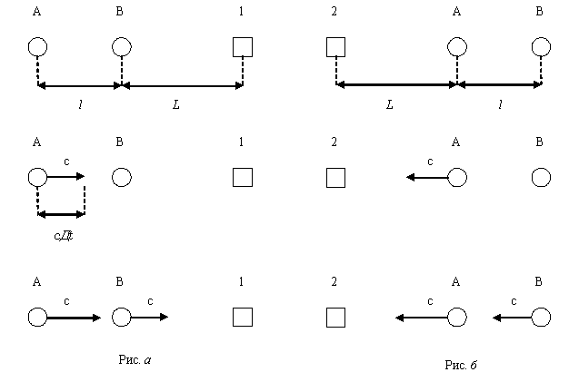

Введение
Глава 01. О постулатах
специальной теории относительности
§ 001. О первом постулате СТО (принципе относительности)
§ 002. О первом постулате СТО (принципе относительности)
§ 003. О первом постулате СТО (принципе относительности)
§ 004. О втором постулате СТО
§ 005. О втором постулате СТО
Конец главы 01
Глава 02 (§ 006-§ 010). О времени в теории относительности
Конец главы 02
Глава 03 (§ 011-§ 013). О массе и энергии
§ 013.4.2. О формуле Е=mc2
Конец главы 03
§ 014. Об экспериментальных следствиях теории относительности
§ 015. О пространстве
Обобщающее заключение
Указывавшиеся работы
И мне остается только счесть этот взгляд
за старый укоренившийся предрассудок,
за лишний пример того, как легко
внушить людям какую угодно идею.
Шопенгауэр
Введение
Везде после краткого сообщения в «основании возникновения мысли» о каком-то убеждении в теории относительности, которое с моей точки зрения подлежит разоблачению, можно завершать подраздел «основание возникновения мысли» и без лишних слов, указывающих на важность разоблачения, сразу переходить к самому разоблачению. Иначе говоря, указав на основание возникновения мысли, можно промолчать о важности этой мысли. Важность разоблачения чего-то в теории относительности подразумевается как бы сама собой. Это обусловлено тем, что, во-первых, теория относительности является широко известной теорией, даже те, кто не изучал ее, обычно слышали о ней не раз. Во-вторых, теория относительности является широко признаваемой теорией, почти все, кому хоть что-то о ней известно, считают утверждения теории относительности истинными и достаточно проверенными. В-третьих, теория относительности является широко восхваляемой теорией, немало кто считает ее величественной, некоторые же вообще склонны превозносить ее до вершин непревзойденности для человеческого разума вообще. В-четвертых, теория относительности является уже довольно пожилой теорией, уже как век вышевысказанное положение вещей остается постоянным, и изменений в этом положении мало кто стал бы ожидать. Некоторые определяют верность теории относительности именно по этому пункту: она ведь уже столько времени существует и вполне заслужила беспридирчивого доверия. Как говорит бессмертный Сенека, все предпочитают верить, а не проверять. Пусть все. Но не я.
Моя критика теории относительности является в некотором смысле вынужденной критикой: во-первых, эта теория, как свидетельствуют и физики, и другие, но только в иных словах, непосредственно трактует философию природы и исходя из этого объясняет некоторые явления в природе, во-вторых, моя философия делает то же самое, но только приводит к выводам, противоречащим теории относительности. Причем даже при самом придирчивом взгляде я не нахожу в своей философии природы внутренних противоречий и разногласий, тогда как даже при поверхностном взгляде нахожу их повсюду в теории относительности. Поэтому, как логическое следствие своей философии природы, я вынужден и могу разбить эйнштейновскую философию.
Данную критику можно считать преимущественно философской, а не исключительно научной, и поэтому, насколько мне известно, единственной в своем роде. Иначе говоря, все главные опровержения здесь замешаны на столкновении непреложных философских истин с научными ошибками данной теории. Таким образом, это – не рядовая научная критика, коих множество и которые, возникая внутри лагеря физиков, предлагают то ту, то иную альтернативу этой теории, указав на ее внутринаучные проблемы, или же вовсе отказываются принимать ее в свою науку, не находя для нее обычной строгой научной опоры. Это – критика теории относительности с точки зрения философии, а не физики, поэтому здесь будет больше апелляций к подлинному простому здравому смыслу и к непримиримости философских истин с положениями данной теории и многим меньше будут указываться углубленные научные аспекты, касающиеся данной проблемы, хотя это не значит, что данная критика вовсе обойдется без них.
Теория относительности по многим пунктам предстает пустой и ложной теорией. Этой ложности учат даже детей в школе, и опровержение ее я буду основывать на одном из таких учебников, допущенных самим Министерством образования. Если кто-то возразит, что использование школьного учебника в разборе такой великой теории не совсем серьезно, то я отвечу, что тогда вся наша школа, все наши учебники, включающие всю имеющуюся сейчас науку, всё наше Министерство образования с тем, что оно допускает как рекомендованное, является несерьезным. Более того, именно только в школьном учебнике и должно печататься самое главное и самое несомненное из той или иной теории. Как раз-таки только школьные учебники должны содержать проверенные сведения и факты науки, которые не могут быть выкинуты из программы обучения с течением времени. Именно учебники и являются самыми серьезными научными пособиями. Это и есть единственная святая святых для наук. Всё остальное, что еще не до конца проверено, можно печатать и в каких-нибудь пособиях, статьях, которым не будут обучать всё подрастающее поколение человечества. В противном случае получается, что детей учат вовсе не науке, а спорным и непроверенным аспектам в той или иной научной гипотезе. Впрочем, как то, что может быть названо мной несерьезным, так и то, что наши учебники напичканы чем угодно до бесконечности, но не вечной наукой, уже имеет место быть.
Тем не менее, я не заметил ложного в релятивистском законе сложения скоростей, основанном на корректных экспериментах. В этом нет ничего удивительного, т. к. распространение света и движение излучающего источника – совершенно различные по своей природе вещи. И кто это ясно поймёт, не удивится открытому закону. Впрочем, вкратце можно заметить, что свет относится к одному виду материи – полю, а источник света – совершенно к другому, а именно, к веществу. Скорость света – это скорость распространения волны напряженности от одного электромагнитного участка к последующему, где предыдущий участок есть причина следующего. Распространение волны зависит от источника излучения только в том, в каком месте это распространение начнется, что является зависимостью от места, из которого началось излучение, а не зависимостью от вещества. При этом не имеет значения ни скорость, ни направление движения источника. Распространение электромагнитной волны, начавшись в заданном месте, происходит по своим, полевым, законам и имеет постоянную скорость, не зависящую от скорости источника и направления его движения. Последнее же происходит по законам, присущим вещественным предметам. Скорость и направление движения вещественного источника никак не связаны и не зависят от скорости волны, которой источник дал начало. Классический же закон сложения скоростей учитывал взаимные отношения движений только вещественных тел, у которых существуют взаимные влияния и зависимости на показатели скорости. Такого влияния и зависимости между источниками излучения и электромагнитной волной, что можно предполагать, реально, однако, просто не существует, т. к. этой зависимости принципиально нет между вещественными и полевыми объектами. Релятивистский же закон сложения скоростей как раз разграничивает и не позволяет смешать в какой-то зависимости всегда постоянную скорость распространения по пространству электромагнитной волны и различные скорости движения вещественных тел. Поэтому те, кто поймут моё изложение в основной философской части относительно вещества и прокатывания энергетической волны по неподвижным самим по себе электромагнитным полям и согласно этому ясно смогут представлять себе эти явления, даже рисовать их себе в воображении, – для тех релятивистский закон сложения скоростей будет как нечто само собой разумеющееся.
Впрочем, закон этот был открыт не релятивистами, а экспериментаторами, занятыми вопросом разности скоростей еще за 25 лет до появления теории относительности. Только впоследствии его приписали к релятивистскому достижению. Я вообще не понимаю, почему он назван релятивистским. Хотя могло случиться так, что Майкельсон и Морли, открывшие казус в скоростях в 1881 году, просто не удосужились провести математическое объяснение ему.
Один из очевидных ложных пунктов в теории относительности – это искривление пространства. В сознании Эйнштейна пространство было смешано с материей и таким образом стало изменяться и искривляться. Теперь то же самое происходит в сознаниях иных людей. Причем это происходит только в их сознаниях, а не во внешнем мире. Уверяю вас. Как же, однако, было чисто и проницательно сознание древних предков англичан, когда они окрестили пространство, безграничный космос и пустоту (пробел, если хотите) одним словом – space. Этот аргумент стоит заметить и в том философском аспекте, в котором многие думают, будто пространство имеет границу. То же самое можно сказать и о каких-то немыслимых изменениях времени, противоречащих всем законам природы. Ибо то, как происходит и может происходить любое явление в нашем мире, согласуется с основополагающими принципами существования и происхождения любых явлений в этом мире (они изложены у меня в философии природы, ибо только там им и место), тогда как с этим не согласуются фантастические выдумки релятивистов.
Надо отметить, что в основном будет идти речь о специальной теории относительности; об общей и говорить не стоит. Ведь именно в последней, как я еще буду доказывать, ложно были поставлены в неразрывную зависимость пространство и материя. А утверждение ОТО – «гравитационное поле физических тел приводит к неевклидовости пространства-времени» (1, с. 190) – годно только курам на смех. Пусть все смехотворцы зарубят у себя на носу: пространство само по себе делает возможным любую достоверную геометрию (и евклидову, и различную неевклидову) независимо от материи, причем немалую роль здесь играет наша субъективная способность познания. Эта мысль достаточно обоснована в моей философии (обл. 3, гл. «Не-объекты и их явления»). Это во-первых. А во-вторых, выражение «пространство-время» вообще не имеет никакого смысла. Если вы хотите сказать «материя», то так и говорите. Но пространство и время, а также материя, – это три абсолютно различные вещи. Более того, эти вещи находят своё собственное, отличное выражение в нашем понятийном аппарате. Поэтому тот, кто не обладает никакой способностью суждения, не сможет ни вникнуть в эти понятия, ни определить для себя те реальные и совершенно разные вещи в мире, которые обозначаются этими понятиями. Видимо, вина природы в том, что она поставила в близкое соседство существование этих трех независимых вещей, вследствие чего обыденная голова не различает их, а видит только одну вещь – «материя-пространство-время».
Учитывая, что я не просто не согласен с теорией относительности, что я не просто предлагаю какую-то альтернативу к тем или иным ее мнениям или же ко всей ней, а я опровергаю ее в большом и малом и настаиваю на ее полнейшем удалении из сферы, которая называется наукой, – учитывая это, всё-таки, несмотря на всю свою обоснованность, критика эта, как мне с предвосхищением кажется, не достучится до умов ученых, по крайней мере, я имею в виду современных. Они ее впустую прочтут или прослушают и отреагируют как заядлые филистеры: «Ну и что? А нам-то что? Мы будем верить в то, что хотим, а не в те истины, что подтверждены и проверены». Дело в том, что они до сих пор пребывают в оцепенении после того, как релятивисты, едва заслышав новые астрофизические открытия, ухватились за них как за свою авторскую собственность и под бой фанфар раструбили по всему свету, что эти явления оказываются следствиями теории относительности, которые в то же время, ее подтверждают. (Что-то я не припомню подобного в логике: чтобы следствие положения могло служить доказательством к этому положению; а ведь логика есть феномен, распространяющийся на всё и вся в пространственно-временном мире). Все им, конечно же, поверили на слово. Любопытно, а поверят ли так же и мне на слово, если я просто скажу, что открытые явления не могут быть следствиями теории относительности и не подтверждают ее? Чем мои слова не красивее релятивистских?
Полагаю, моя критика не будет принята учеными только из-за того, что они не знают, как еще можно объяснить те астрофизические явления. Я им поясню: как ни странно, это может сделать астрофизика. И ей не нужна никакая вычурная теория типа относительности. Правда, ей потребуется подлинная теория электромагнитных волн. Если говорить больше и точнее, то, на мой взгляд, эти явления легко могут быть объяснимы с точки зрения единственной достоверной на сегодняшнее время классической механики, которая должна вследствие своей подлинной единственности называться просто «механика». Еще одна странность в том, что теория относительности с поддержки приспешников якобы объясняет всего только три известных явления. Позариться на большее, видимо, не позволяет абсурдность подходов самой теории, несмотря на всю наглость релятивистов. (Впрочем, можно подозревать, что другое, более абсурдное, например, теория большого взрыва, расширяющейся вселенной – есть только щупальца, выпущенные именно теорией относительности; именно скрываемые щупальца самой теории, иначе их полнейшая абсурдность совсем дискредитирует теорию относительности). Либо астрофизики возьмут себя в руки, выйдя из шокового оцепенения, и, наконец, объяснят эти явления самостоятельно, либо это сделаю я, опираясь на истины философии природы. Вкратце и между делом я показал в этой критике, как это делается.
Глава 01. О постулатах
специальной теории относительности.
§ 001. О первом постулате СТО (принципе относительности).
Основание возникновения мысли.
Не меньше века считается, что первый постулат теории относительности привнес в познания человека некое совершенно новое знание. (Напомню, о чем гласит первый постулат: все законы природы одинаковы в инерциальных, т. е. движущихся относительно друг друга равномерно и прямолинейно, системах отсчета).
Разоблачение заблуждения.
Первый постулат, несмотря на эйнштейновскую словесную обработку, украден у Галилея. Известным принципом относительности Галилея задолго до Эйнштейна и совершенно так же, как у последнего, утверждается, что законы течения заданного процесса одинаковы при одинаковых условиях независимо от перемены мест. (Принцип относительности Галилея в современной обработке гласит: «во всех инерциальных системах отсчета законы классической динамики имеют один и тот же вид» (1, с. 88)).
Первый постулат никоим образом не сообщает человечеству чего-то нового: пожалуй, даже каждый ребенок додумался бы до этого принципа и, судя по всему, его можно считать априорным. В самом деле, ведь если материальный объект в данных материальных условиях и в данном месте действует так-то, то при перемене места, но в абсолютно тех же материальных условиях, естественно будет предположить, что данный объект будет действовать так же, что и подтверждается апостериорно. Ведь не иное место как таковое и само по себе может изменить течение какого-то процесса, а перемена материальных условий, в которых происходит этот процесс. Даже сами сторонники релятивизма замечают, что отказ от принципа относительности невозможен, и он бы приводил к положениям, с которыми просто «никак нельзя согласиться» (2, с. 60).
В таком случае оправдать обнародование данного постулата можно было бы попытаться за счет того, что оно, подобно любому открытию физического закона, отчетливо показывает всем ту закономерность, которая была и будет всегда, но которую до обнародования никто не осознавал отчетливо. Однако и это не поможет именно ввиду того, что первым здесь был вовсе не Эйнштейн, а Галилей.
Резюме.
1. Принцип относительности Галилея тождествен принципу относительности Эйнштейна и возник за несколько веков до последнего.
2. Каждый, слегка подумав, мог бы сам создать первый постулат; т. е. он может считаться априорным.
Вывод 001.
Ничего нового и никакого открытия в первом постулате специальной теории относительности не содержится, хотя, будучи именно постулатом, он обязан иметь такое содержание.
§ 002. О первом постулате СТО (принципе относительности).
Основание возникновения мысли.
За век существования теории относительности никто не заметил, что первый и основополагающий постулат специальной теории относительности стоит в непримиримом противоречии с общей теорией относительности.
Разоблачение незнания.
Общая теория относительности ставит в неразрывную зависимость материю и пространство. Судя по всему, идеалом и верхом мечтаний общей теории относительности будет такое положение, если всем без исключения удастся внушить, что пространство и материя – это одно и то же.
Первым постулатом (как показал параграф 001) утверждается, что не перемена места как таковая и сама по себе может изменить течение какого-то процесса, а перемена материальных условий, в которых происходит этот процесс.
Если пространство и материя стоят в неразрывной зависимости, то перемена материальных условий означает в то же время перемену места, и наоборот, и тогда перемена места (будучи практически переменой материальных условий) уже сама по себе вполне может привести к изменению течения какого-то процесса.
Резюме.
1. Относительно того, как влияет на ход материальных процессов перемена места, СТО и ОТО противоречат друг другу.
Вывод 002.
Первый и основополагающий постулат специальной теории относительности стоит в непримиримом противоречии с общей теорией относительности.
§ 003. О первом постулате СТО (принципе относительности).
Основание возникновения мысли.
Многие, особенно те, кто не изучал теорию относительности, считают, что теория относительности устанавливает, что всё относительно.
Долгое время я считал, что абсолютно для всех остается неизвестным противоречие между названием первого постулата СТО («принцип относительности») и названием всей теории в целом («теория относительности») с одной стороны и смыслом, вложенным в первый постулат, с другой стороны. Однако мне удалось найти место, где об этом сообщается уже до меня. Тем не менее это не мешает быть распространенным вышеобозначенному мнению, а разоблачение его не окажется излишним ввиду редкости такого разоблачения.
Разоблачение заблуждения.
Упомянутое мной противоречие состоит в том, что первый постулат, названный принципом относительности и от которого пошло название самой теории относительности (см. 2, с. 38), определяет, что нет ничего относительного: все системы отсчета равноправны, нельзя выделить ни относительную, ни абсолютную.
По смыслу то же самое утверждалось уже в 1974 году, причем сторонниками релятивизма, в частности: «Может создаться впечатление, что главное в теории относительности – это то, что всё относительно. Но дело совсем не в относительности.<…> Таким образом, теорию относительности правильнее было бы назвать теорией неизменности…» (2, с. 60).
Резюме.
1. О том, что нет ничего относительного, говорит сам принцип относительности.
2. Некоторые сторонники релятивизма указывают на ложность мнения, будто теория относительности – это теория о том, что всё относительно.
Вывод 003.
Принцип относительности и теория относительности устанавливают на самом деле, что нет ничего относительного.
§ 004. О втором постулате СТО.
Основание возникновения мысли.
Считается, что второй постулат СТО столь же значителен и самостоятелен, сколь и первый постулат, ведь именно на этих двух независимых и разносмысловых остовах стоит теория относительности. Таким образом, второй постулат несет в себе некое абсолютно новое знание, которое не может быть заключено в других положениях. Именно поэтому он и может быть назван постулатом.
Разоблачение заблуждения.
На самом же деле второй постулат является просто частным выражением первого постулата, точнее даже, он служит просто рядовым примером для иллюстрирования первого постулата. В этом случае его нельзя считать постулатом. Заметьте сами: материальный объект (свет) в одинаковых условиях (в вакууме), но в разных местах (во всех инерциальных системах отсчета) должен действовать одинаково (скорость одинакова). (В скобках – второй постулат, вне скобок – первый).
Постулат, поскольку он постулат, должен открывать нам некое новое знание. Но вследствие того, что второй постулат – только иллюстрирующий пример к первому постулату, всё, что нам собирается открыть второй постулат, уже дано в первом постулате.
Резюме.
1. Второй постулат (вопреки тому, что он постулат) – это не более чем рядовой пример к пояснению первого постулата.
2. Во втором постулате (вопреки тому, что он постулат) не заключено новое знание.
Вывод 004.
Второй постулат СТО не может в принципе считаться постулатом.
§ 005. О втором постулате СТО.
Основание возникновения мысли.
Релятивистами утверждается (и все им верят на слово), что именно вторым постулатом определяется, что скорость любых материальных взаимодействий не превышает скорость света.
Разоблачение заблуждения.
Во-первых, не существует ни одной логической связи, с помощью которой можно было бы утверждение о скорости света как максимально возможной скорости вывести из второго постулата. Ведь во втором постулате утверждается не более того, что скорость света в разных местах вакуума одинакова.
Во-вторых, не так давно были получены экспериментальные данные, подтверждающие у частиц (я полагаю, у электромагнитных частиц, а не вещественных) наличие скорости свыше скорости света. Любопытно, что сразу после получения этих неоспоримых фактических данных ученые-экспериментаторы были вынуждены смущенно оправдываться перед «темным лесом», что они ни в коем случае не хотят подвергнуть какому бы то ни было сомнению саму, видите ли, теорию относительности. В их ситуации можно было бы просто и смело успокоить «темный лес»: «словесно выраженная теория всегда права и неопровержима, даже если получены фактические данные в реальности, которые опровергают эту теорию в голове».
Резюме.
1. Из постулатов СТО невозможно вывести утверждение о скорости света как о максимально возможной скорости.
2. Имеются экспериментальные данные, свидетельствующие о скорости большей, чем скорость света.
Вывод 005.
Несмотря на убеждение релятивистов, что из второго постулата СТО следует, что максимально возможная скорость в мире – это скорость света, на самом деле ничего такого не следует и это ложное убеждение уже опровергнуто экспериментально.
Конец главы 01.
Глава 02. О времени в теории относительности.
§ 006.
Основание возникновения мысли.
В теории относительности утверждается: «сосуществование событий в нашем чувственном восприятии не означает одновременности этих событий» (1, с. 194). Для пояснения ниже приводится один из таких примеров: «Глядя в окно на звездное небо, мы как бы зондируем прошлое разной давности… Одни звезды так, как «теперь», выглядели несколько лет назад, другие – миллионы лет назад, третьи – сейчас существуют, но мы их не видим: свет от них к нам еще не успел дойти» (1, с. 195).
Разоблачение заблуждения.
Если сказано «сосуществование событий в нашем чувственном восприятии», то этим буквально уже и сказано о сосуществовании, совместном существовании, одновременном существовании событий в нашем чувственном восприятии. Таким образом, данное релятивистское положение явно внутренне противоречиво – готовый пример нарушения одного из законов логики (закона непротиворечия), который претендует на место среди типичных логических ошибок. В приведенном примере со звездами событиями в нашем чувственном восприятии являются пришедшие от разных звезд и попавшие на нашу сетчатку соответственно разные фотоны. Так вот, эти фотоны на нашей сетчатке как раз сосуществуют одновременно и никак иначе просто не могут.
Если пытаться оправдать правомерность обсуждаемого суждения тем, что сначала «событиями в нашем чувственном восприятии» называются именно эти фотоны на нашей сетчатке, а уже потом в этом же суждении под «этими событиями» подразумеваются звезды, находящиеся в космосе, то налицо типичное нарушение логического закона тождества и в таком виде его можно смело, как пример грубых ошибок, включать во все учебники по логике.
Если же, наконец, предполагать, что в обоих значениях событиями называются сами звезды, то, во-первых, звезды, будучи телами, не могут называться событиями, подобно тому как мы не назовем событием такие тела, как кресло, карандаш или человека. А во-вторых, звезды, будучи даже названы событиями, не могут существовать и сосуществовать в нашем чувственном восприятии: звезды как таковые могут находиться в просторах космоса и занимать там огромные пространства, но они никак не могут поместиться на нашей сетчатке.
Резюме.
1. Из самого обсуждаемого тезиса логически выводится одновременность «этих» событий. Сам же тезис нарушает логический закон непротиворечия.
2. Оправдание тезиса тем, что «события» в нем употребляются в разном значении, приводит к нарушению логического закона тождества.
3. Оправдание тезиса тем, что событиями в обоих значениях понимаются сами звезды, несостоятельно, ввиду того, что тела – это не события и они не существуют в нашей сетчатке.
Вывод 006.
Сосуществование событий в нашем чувственном восприятии означает, вопреки убеждению в теории относительности, не что иное, как одновременность этих событий.
§ 007.
Основание возникновения мысли.
Релятивизм учит, будто «”Прошлое” – множество событий, которые могли оказывать влияние на события в настоящем. “Будущее” – множество событий, на которые могут оказать влияние события в настоящем» (1, с. 195).
Разоблачение заблуждения.
Прошлое и будущее – это части определения времени, а не материи. События же как раз относятся к вещам материи. Все знают, что прошлое и будущее – это такое время, а не такая материя. Прошлое и будущее состоят из множества последовательных моментов во времени, а не являются материальными событиями, как это утверждается в релятивистском определении.
Кто-то бы мог мне заметить, что в этом-то и состоит один из фундаментов всей теории относительности: материя, время и пространство – это почти одно и то же, и это еще нужно понимать. Я бы сказал по-другому – в этом-то и состоит одна из ее глупейших основополагающих ошибок, содержание которой невозможно даже представить себе, и как раз вот это надо понимать.
Резюме.
1. Прошлое и будущее никак нельзя назвать событиями.
Вывод 007.
Вопреки учению релятивистов, прошлое и будущее нисколько не являются некоторым множеством событий.
§ 008.
Основание возникновения мысли.
«Пусть световой сигнал излучается в центре ракеты, движущейся со скоростью u (рис. 150).
Наблюдатель 1 внутри ракеты считает, что свет достигает противоположных стен одновременно, т. к. стены находятся на одинаковом расстоянии от источника, а скорость света одинакова во всех направлениях. Внешний наблюдатель 2 знает, что скорость света постоянна и не зависит от направления движения. Левая стена приближается к источнику со скоростью u, а правая удаляется от него с такой же скоростью. Поэтому световой сигнал достигает левой стены раньше, чем правой. Хотя разность времени прибытия светового сигнала будет очень незначительной (если скорость ракеты мала по сравнению со скоростью света), принципиально важно, что сигнал не достигнет обеих стен одновременно.
Два события, одновременные в одной инерциальной системе отсчета, не являются одновременными в другой инерциальной системе отсчета.
Одновременность – не абсолютная характеристика явлений. Разные наблюдатели могут иметь различные представления об одновременности событий» (1, с. 195-196).
Разоблачение заблуждения.
Пока идет рассуждение о том, что считает один наблюдатель и что знает другой, не совершается, по существу, никакой ошибки. Но на основании этого рассуждения выносятся странные однозначные умозаключения: «два события… не являются одновременными... Одновременность – не абсолютная характеристика явлений». Получается, что если наблюдатель 1 просто считает, что свет достигает противоположных стен одновременно, то это не просто мнение, а это действительно так, это действительно имеет место быть; и так же то, что наблюдатель 2 знает о том, что световой сигнал достигает левой стены раньше, чем правой, свидетельствует о том, что и это положение действительно имеет место в реальности. Именно на этой основе рождаются суждения о том, что два события могут быть признанны неодновременными, что одновременность в общем-то и не относится к внешним, реальным характеристикам явлений. Но, однако же, мы имеем здесь явное противоречие: свет в действительности и достигает противоположных стен одновременно и в то же время не достигает их одновременно. Ссылаться на то, что определение одновременности либо неодновременности зависит от того, кто какое мнение имеет на этот счет, кто как «считает», совершенно бессмысленно, ведь не от субъективных мнений наблюдателей зависит то, как происходит внешний объективный процесс. Но и пусть даже наряду с этими мнениями, я вправе спросить: «А как же обстоит положение в действительности? Что действительно происходит с ракетой и светом?»; со строгостью логического закона непротиворечия я вправе требовать определенности: «Свет в действительности либо достигает противоположных стен одновременно, либо не достигает их одновременно, третьего не дано и просто не может быть в реальности; так достигает ли он их одновременно или нет?». Согласно тому, какие сведения мы имеем, мы можем легко и обоснованно ответить на этот последний вопрос.
Итак, ракета летит. Свет, испущенный из центра ракеты, распространяется к противоположным стенам ракеты (в данном примере рассматриваются фронтальные (небоковые) стены), одна из которых (передняя) ввиду движения ракеты удаляется от идущего на нее луча, другая (задняя) – приближается к другому и идущему на нее лучу. Лучи света при этом имеют одну и ту же скорость. В таких условиях, хотим мы того или нет, что бы мы там себе ни думали и ни представляли, ни считали и ни знали, лучи с вынужденной неизбежностью достигнут противоположных стен неодновременно. Так какое здесь вообще значение могут иметь наблюдатели, их расположение и даже вообще наличие и существование, не говоря уже об их безумных мнениях?
Помимо этого, то, что «одновременность – не абсолютная характеристика явлений», поясняется тем, что «разные наблюдатели могут(!) иметь различные представления(!) об одновременности событий». Другими словами именно то, что взбредет в голову каждому об одновременности либо неодновременности событий, и сделает внешние, независимо происходящие, материальные явления либо одновременными, либо неодновременными. Интересно, а если наблюдатель сменит мнение? – Получится, когда он думает, что события одновременны, тогда они реально одновременны, а когда он подумает, что они неодновременны, то тогда они реально становятся неодновременными. Подобно этому, когда я подумаю, что сборная России по футболу – не чемпион мира, тогда она действительно не чемпион мира. А когда я подумаю, что она – чемпион мира, то тогда она становится чемпионом мира в реальности. Такова логика релятивизма.
Резюме.
1. То, что два события могут быть признаны неодновременными и что одновременность не является собственной характеристикой явлений, основано в рассматриваемом рассуждении на противоречии.
2. В действительности свет приходит к стенам неодновременно и не зависит от мнений возможных наблюдателей.
3. Одновременными или неодновременными событиями в теории относительности считаются не те, которые реально одновременны или неодновременны. Любые события (даже одни и те же) будут признаваться и одновременными, и неодновременными исключительно на основании принятия мнений абсолютно всех, кто что-либо подумает на этот счет.
Вывод 008.
Совершенно ложными оказываются релятивистские мнения, будтодва события, одновременные в одной инерциальной системе отсчета, не являются одновременными в другой инерциальной системе отсчета, и якобы одновременность – не абсолютная характеристика явлений.
§ 009.
Основание возникновения мысли.
«Предположим, что в точках А и В, находящихся на расстоянии l друг от друга (рис. 151), последовательно через промежуток времени Дt вспыхивают две звезды (сначала в точке А, а затем в точке В). Приемник излучения находится в точке 1 на расстоянии L от звезды В (рис. 151, а).
В момент вспышки звезды В излучение от звезды А распространяется на расстояние сДt.
Если это расстояние меньше расстояния между звездами, то интервал времени между вспышками меньше времени, необходимого для распространения света между ними: Дt<l/c.
В этом случае излучение от звезды В достигнет приемника раньше, чем от звезды А. Поэтому наблюдатель 1 полагает, что последовательность событий была обратной: звезда В зажглась раньше, чем звезда А. Когда приемник излучения находится в точке 2 (рис. 151, б), излучение от звезды А при тех же условиях достигнет приемника раньше, чем от звезды В. Наблюдатель 2 считает поэтому, что звезда А зажглась раньше, чем звезда В.
Если промежуток времени между событиями (вспышками звезд) меньше времени, необходимого для распространения света между ними, то порядок следования событий остаётся неопределенным, зависящим от положения наблюдателя» (1, с. 196-197).
Рисунок (в моей схематической передаче) дан такой.

Разоблачение заблуждения.
Если, как сказано изначально, в просторах космоса в точках А и В, находящихся на расстоянии l друг от друга, последовательно через промежуток времени Дt вспыхивают две звезды (сначала в точке А, а затем в точке В), то истинный порядок следования событий заведомо известен, уже дан и не вызывает сомнения: сначала, как указано, вспыхивает звезда в точке А, а затем другая звезда – в точке В. Ибо не может быть такого, что и звезда А зажигается раньше, и звезда В зажигается раньше. Т. к. между вспышками длится некоторый промежуток времени, то вынужденно раньше может вспыхнуть только одна какая-то определенная звезда, а какая именно – это уже определено и дано в предопределяющем условии задачи.
И здесь совершенно ничего не зависит от положений тех или иных наблюдателей, от того, что себе считает тот или что себе полагает иной. Даже полное отсутствие каких бы то ни было наблюдателей не изменит того, что звезда А вспыхивает в пространствах космоса раньше, чем звезда В. Равно как этого не изменит никакое бесчисленное количество наблюдателей и никакое совершенно всевозможное их месторасположение в пространстве, и, уж тем более, никакое количество их безумных сугубо личных мнений.
Резюме.
1. Порядок следования независимых материальных событий определяется процессами в материи, а не субъективными предположениями людей.
Вывод 009.
Вопреки заблуждению теории относительности, порядок следования событий всегда остаётся определенным и никогда не зависит от положения наблюдателя.
§ 010.
Основание возникновения мысли.
«Световые часы (одна из разновидностей часов) – два зеркала, установленных на расстоянии l параллельно друг другу.
Световой импульс, отражаясь от поверхностей зеркал, может перемещаться между ними вверх и вниз за промежуток времени t”=l/c.
При каждом отражении импульса от зеркала часы тикают. <…> Время t называется собственным временем.
Собственное время – время, измеренное наблюдателем, движущимся вместе с часами.
Внешнему наблюдателю путь светового импульса (при движении световых часов вместе с ракетой) по диагонали будет казаться более длинным, чем пилоту корабля (рис. 153). <…> Введем промежуток времени t, за который импульс достигнет верхнего зеркала (с точки зрения внешнего наблюдателя). За это время космический корабль пролетит расстояние ut, а световой импульс пройдет расстояние ct. Применяя теорему Пифагора к треугольнику AB”A”, имеем (ct)2=(ut)2+(ct”)2.
Предположим, что время в неподвижной и движущейся системах отсчета течет одинаково (t=t”). Тогда c2=u2+ c2.
Полученное противоречие означает следующее.
Время в неподвижной системе отсчета и движущейся относительно нее течет с разной скоростью: t‡t”. <…>
Эффект замедления времени не имеет ничего общего с особыми свойствами света или конструкцией световых часов, а является неотъемлемым свойством самого времени. <…> Замедлением времени объясняется «парадокс близнецов»: вернувшийся из космического путешествия близнец стареет гораздо меньше, чем его брат, оставшийся на Земле. <…>
Человечество пока не имеет возможности использовать эффект замедления времени в практическом плане для совершения космических полетов к звездам со скоростью, близкой к скорости света. Тем не менее эффект замедления времени был экспериментально обнаружен и при скорости движения, много меньшей скорости света.
В 1971 г. было проведено сравнение хода цезиевых часов: одни часы находились в полете вокруг Земли на реактивном самолете, а другие оставались в обсерватории на Земле.
При приземлении самолета отставание часов, путешествовавших вокруг Земли, от покоившихся составило около 200 нс. Этот эксперимент является прямым подтверждением представлений СТО о том, что ход времени различен в разных ИСО.
Время не является инвариантом для различных ИСО». (1, с. 199-203).
«Движущиеся часы идут медленнее неподвижных, т. к. время в движущейся системе отсчета замедляется». (1, с. 200, на полях).
В схематической передаче рисунок 153 выглядит следующим образом.
Разоблачение заблуждения.
Прежде всего, стоит обратить внимание, что в этом рассуждении допускается непозволительное нарушение закона тождества.
Выражениями «Время t” называется собственным временем. Собственное время – время, измеренное наблюдателем, движущимся вместе с часами» устанавливается, что t” – это количество моментов времени, измеренное данным наблюдателем. Выражением «Введем промежуток времени t, за который импульс достигнет верхнего зеркала (с точки зрения внешнего наблюдателя)» устанавливается, что t – это количество моментов времени, за которые луч достигает верхнего зеркала. А теперь обратите внимание на последующее выражение: «Предположим, что время в неподвижной и движущейся системах отсчета течет одинаково (t=t”)». Этим выражением устанавливается, что t и t” – это скорости, с которыми сменяют друг друга, последовательно идущие моменты времени (соответственно в неподвижной и движущейся системах отсчета). А скорости смены моментов и количество отдельно выбранных моментов – это разные вещи. Отсюда и возникает «полученное противоречие». Поэтому можно сказать, что совершенно на пустом месте возникло предположение, что t=t”; да к тому же обозначенные в этом предположении t и t” по своему значению никак не совпадают со значением ранее обозначенных t и t”.
Определимся, сколько импульсов «бегает» между зеркалами световых часов. Описание этих часов указывает на наличие одного импульса. И это вполне справедливо. Ориентируясь именно на отражения одного-единственного импульса, световые часы, ни в чем не запутываясь, ведут отсчет времени. Представьте, если бы импульсов было хотя бы два: часы не знали бы, какому импульсу доверять, каждый из них бил бы по противоположному зеркалу в разнобой и когда ему вздумается.
В таком случае положение, указанное на рисунке 153, невозможно в принципе, ни при каких условиях, ни в движении, ни в покое, независимо от того, что там кому кажется и бредится. Ведь это положение на рисунке свидетельствует о наличии двух импульсов, причем равноправно признаваемых в качестве существующих, ибо так, видите ли, кажется разным наблюдателям.
Таким образом, если эти часы находятся в покое, то луч падает на зеркала из положения «в зените», отражаясь под перпендикулярным углом, под углом 180°. Иначе говоря, в покое имеется положение исключительно с лучом ct”, отражающимся по одной и той же прямой вверх и вниз. Иначе получилось бы, что луч по закону преломления должен был бы постепенно или сразу «уйти» из часов. Если же часы движутся, то может быть дано положение исключительно с лучом ct. Ведь иначе опять-таки оказалось бы, что луч, отражаясь себе вверх-вниз под 180° по закону преломления, выпал бы из часов, когда они уйдут в своем движении. Следовательно, независимо от того, что там бредится пилоту корабля, в полете между зеркалами часов отражается исключительно только «косой» луч ct.
Однако же в движении луч между зеркалами проделывает больший путь, чем он проделывает его в покое. Это наглядно видно на рисунке из сравнения длины луча в движении ct и луча в покое ct”. Это же самое можно установить геометрически: в движении угол преломления, будет больше, чем ровно 180°00*, ибо только так луч сможет сохраниться между уходящими вдаль зеркалами. А это значит, что лучу для очередного отражения придется проделывать больший путь, чем в покое. И сколь бы ни была велика скорость света и сколь бы ни было мало отличие угла преломления по сравнению со 180°00* (пусть даже 179°59* или 179°59*59”), это неизбежно приводит к тому, что луч на прохождение пути между зеркалами в движении затрачивает больше моментов времени, чем в покое. А часы фиксируют каждое отражение этого луча. Таким образом, в движении часы фиксируют это отражение с некоторой задержкой по сравнению с той же фиксацией в покое. В общем говоря, в движении секунда, отмеренная часами, наступает позже, чем секунда, отмеренная этими часами в покое. Поэтому в движении часы будут отсчитывать время с задержками, будут отставать по сравнению со своим положением в покое. Следовательно, эффект замедления времени касается исключительно особых свойств света и конструкции световых часов, и нисколько не является каким-то свойством самого времени. Точно противоположно тому, что думают себе релятивисты.
Гипотетически выведенный из ложного эффекта замедления времени «парадокс близнецов», следовательно, как таковой вообще не существует.
Наконец, если цезиевые часы имеют схожий принцип действия со световыми часами, то именно из-за того, что в полете, в движении луч проделывает в часах больший путь и вынуждает отсчитывать время с задержкой по сравнению с покоящимся положением, то именно из-за этого в 1971 г. и был получен тот результат, что движущиеся часы отстали от покоящихся на 200 нс. Если принцип действия цезиевых часов химический или физический, то вовсе не исключено, что один и тот же материальный процесс на скорости и в покое, а также на высоте и на поверхности Земли (т. е. при разных силах притяжения), может иметь разную скорость. Это даже наиболее вероятно. К примеру, даже такой простой процесс, как закипание воды, имеет ту особенность, что вода в горах может закипеть при 80° С, то есть данный физико-химический процесс происходит на равнине и на высоте (при разной силе тяжести) с разной скоростью. Следовательно, никакого экспериментального обнаружения эффекта замедления времени не было в природе; и эксперимент 1971 года никаким боком не подтверждает представления СТО о том, что ход времени различен в разных ИСО. На самом деле, этот эксперимент напрямую подтверждает не релятивистские выдумки, а мои, противоположные выкладки.
Резюме.
1. «Полученное противоречие» в разбираемом рассуждении возникает из нарушения закона тождества.
2. Независимо от чьих-либо точек зрения и от того, что кому будет казаться, в световых часах имеется только один вполне определенный световой импульс.
3. Эффект замедления времени касается исключительно особых свойств света и конструкции световых часов.
4. Т. к. эффект замедления времени не существует, то не существует и его следствия – «парадокса близнецов».
5. Никакого экспериментального обнаружения эффекта замедления времени не было в природе. Даже более, на самом деле это был эксперимент по опровержению эффекта замедления времени.
Вывод 010.
Замедление времени со всеми идущими отсюда следствиями – это сугубо личное заблуждение релятивизма.
Конец главы 02.
Глава 03. О массе и энергии.
§ 011.
Основание возникновения мысли.
«В 1906 г. Эйнштейн выступил со статьей “Закон сохранения движения центра тяжести и инерция энергии”. Здесь он обосновывает соотношение между массой и энергией с помощью мысленного эксперимента» (3, с. 212). В этом абстрактном размышлении Эйнштейн приходит к установлению, что первоначально покоящееся тело, на которое не действуют другие тела, может перемещаться под воздействием излучения. «“Ясно, – пишет Эйнштейн, – что полученный результат не содержит внутреннего противоречия, но он противоречит основным законам механики, согласно которым первоначально покоящееся тело, на которое не действуют другие тела, не может перемещаться”. Это противоречие устраняется, если предположить, что излучение обладает массой m. Когда излучение проходит расстояние а, то вместе с ним проходит это расстояние и масса m» (3, с. 212-213). Сразу же за этим, именно на этой основе, путем математических действий с буквенными обозначениями рождается пресловутое E=mc2. А также, именно на этой основе, впоследствии в отношении новых найденных явлений в теории относительности излучениям стали, не долго думая, приписывать массу, например, объяснили отклонение луча звезды за Солнцем наличием массы у фотонов света. Хотя объясняется это явление и без предположения массы (§ 012).
Разоблачение заблуждения.
Но если законы классической механики действительно полагают, что первоначально покоящееся тело не может перемещаться без стороннего непосредственного воздействия других тел, то эти законы не учитывают своих собственных давно полученных разнообразных экспериментальных примеров: частицы и заряды движутся, реагируя друг на друга, без непосредственного соприкосновения, а в соответствии с руководящими здесь силами (силовыми линиями) отталкивания и притяжения; проводники с током притягиваются и отталкиваются, не воздействуя друг на друга, а повинуясь магнитным полям; каждая частичка железной пыли выстраивается вокруг проводника с током, не повинуясь воздействию со стороны других частичек или со стороны проводника, или даже со стороны движущихся электронов в проводнике, а перемещается и выстраивается определенным образом в соответствии с диктующими здесь силовыми линиями магнитного поля вокруг проводника; планеты, космические тела движутся, не воздействуя друг на друга, а повинуясь существующим между ними гравитационным полям; магнит может быть сдвинут с места другим магнитом без какого бы то ни было непосредственного воздействия (этот эксперимент доступен чуть ли не каждому). Все эти примеры из классической механики. И без всяких проблем они целиком и достаточно объясняются уже много веков в рамках классической механики.
И всё это реально видимое движение данных тел происходит без всякого непосредственного действия на них каких-то иных тел.
Таким образом, мысленный эксперимент Эйнштейна может быть со всей справедливостью зачислен в класс вышеперечисленных примеров, а класс этот известен уже за много веков до Эйнштейна. И эти примеры совершенно не вынуждают (собственно, и не вынудили никого) предполагать, что движение в этих случаях должно быть обусловлено непосредственным воздействием сторонней массы. Множество веков наблюдались вышеперечисленные реальные (а не просто мысленные, как у Эйнштейна) примеры и никто никогда не замечал в них каких-то необъяснимых странностей, неурядиц, загвоздок, которые можно было бы объяснить только за счет того, что осталось бы признавать здесь воздействие сторонней массы. Без всяких странностей и загвоздок эти примеры полностью и легко объяснялись и объясняются и поныне. Эйнштейновское предположение не имеет достаточных оснований; в логике эта ошибка носит название «не следует».
С точки зрения логики всё выглядит следующим образом. Если отбросить, сдуть с рассуждения Эйнштейна 1906 года всю шелуху и увидеть эту статью в рамках совершенного Эйнштейном логического умозаключения, то Эйнштейн рассудил как ребенок: излучение может вызвать изменения в веществе, следовательно, излучение обладает массой. Такова в двух суждениях вся его статья. Это, как заметят логики, энтимема, т. е. в этом умозаключении пропущена одна предварительная посылка, которая не упоминается, но неизбежно подразумевается. В этой скрытой посылке и заключается вся загвоздка. Пусть никто не думает, что я хочу приписать Эйнштейну то, чего он не говорил и не имел в виду. Любой логик подтвердит, что только эта скрытая посылка могла способствовать выводу Эйнштейна. Более того, каждый логик сможет вам вывести эту скрытую посылку из имеющихся двух суждений и без меня. Они бы вывели вам следующее – то, что способно вызвать изменения в веществе, обладает массой.
Но вызвать изменения в веществе может не только то, что обладает массой, но и то, что обладает только энергией и не обладает массой (это полевые явления; выше я предложил этому примеры). Эта типичная логическая ошибка, будучи одной из первоочередных основ всей теории относительности и в частности формулы E=mc2, была принята на ура во всём ученом мире. Я сказал…ученом?
Наконец, где экспериментальное доказательство того, что поле (а следовательно, и излучение) обладает массой? Пока его нет, приписывать массу полевой материи невозможно. Нам известна масса достоверно лишь из вещества. Поэтому на данном уровне науки я вправе спросить у релятивистов: «Из какого вещества состоит поле?». Вопрос – на который не может быть получен ответ; точнее ответ в том, что такого вещества нет. Ибо вещество и поле – это совершенно посторонние друг для друга, отличные явления. С таким же успехом я мог бы спросить «из какой породы дерева строят кирпичный дом?».
Таким образом, за множество веков не получено ни одной реальной или мысленно-логической предпосылки, которая бы действительно вынуждала признавать в вышеобозначенных реальных примерах воздействие сторонней массы; а не получено такой предпосылки не потому, что все люди много веков были невнимательными и недалекими, а потому, что у такой предпосылки нет никаких достаточных оснований, никаких подлинных поводов.
Резюме.
1. Первоначально покоящееся тело, на которое не действуют другие тела, вполне может перемещаться.
2. Не существует ни одного реального и ни одного мысленно-логического основания, заставляющего предположить у полевых явлений наличие массы.
Вывод 011.
Нет никаких оснований приписывать излучениям, и вообще полевым явлениям, массу.
§ 012.
Основание возникновения мысли.
То, что луч идущий от какой-либо далекой звезды, огибает Солнце, объясняют в теории относительности наличием массы у луча света.
Разоблачение заблуждения.
В таком объяснении, основанном на необоснованных предположениях Эйнштейна (§ 011), нет никакой нужды. В этом явлении мы имеем пересечение, «столкновение» двух полевых явлений – гравитационного поля Солнца и электромагнитного луча. В некотором смысле изменение курса луча следует ожидать с неизбежностью, даже не зная ничего о теории относительности. Ведь здесь ситуация подобна тому, когда между пластинами с разнополярными потенциалами помещают какой-либо заряд. Линии напряженности изначально, до «внедренного» заряда, направлены напрямую между пластинами, а после появления «гостя» они изменяют свое направление. Они становятся, как говорят, результирующими. И никто не заявляет, что, следовательно, мол, силовые линии пластин или заряда обладают массой. Точно так же и в рассматриваемом явлении в сильном гравитационном поле, ставшем на пути луча, результирующее направление распространения электромагнитного луча изменяется, и для этого ему не нужно обладать массой.
Резюме.
1. Везде, где силовые линии (которые вообще не обладают массой) воздействуют друг на друга, возникает результирующая силовая линия, что и наблюдается в явлении отклонения луча.
Вывод 012.
Объяснение явления огибания Солнца лучом звезды не требует предполагать наличие массы у луча.
§ 013.
Основание возникновения мысли.
«Классическая механика разделяет и определяет два различных вида материи: вещество и поле. Необходимым атрибутом вещества является масса, а поля – энергия. Соответственно существуют два закона сохранения: закон сохранения массы и закон сохранения энергии. Согласно теории относительности нет существенного различия между массой и энергией.
Вещество имеет массу и обладает энергией; поле имеет энергию и обладает массой». (1, с. 209-210 (курсив не мой)).
Ошибка на ошибке.
Анализ.
1) Здесь закралась неразрешимая логическая ошибка при употреблении понятия энергии (§ 013.1).
2) Эта ошибка вызвана тем, что понятие энергии слишком многозначно, и поэтому его употребление без уточнения значения недопустимо, ибо такой прецедент обрекает на двусмысленность и логические ошибки (§ 013.2).
3) То, что существуют два закона сохранения соответственно (закон сохранения массы для вещества и закон сохранения энергии для поля), не верно, ибо закон сохранения энергии можно приписать и веществу, а как соответствующий именно полю этот закон вообще нельзя признать (§ 013.3).
4) Совершенно неверно, что нет существенного различия между массой и энергией (§ 013.4).
5) Положение, что признаками как вещества, так и поля должны считаться и масса, и энергия, делает совершенно неразличимым вещество и поле. Это неверно по нескольким пунктам (§ 013.5).
§ 013.1.
Основание возникновения мысли.
«Необходимым атрибутом вещества является масса, а поля – энергия <…> Вещество имеет массу и обладает энергией; поле имеет энергию и обладает массой» (1, с. 209-210). Здесь присутствует неразрешимая логическая ошибка.
Разоблачение незнания.
Необходимым атрибутом поля названа энергия и она же, т. е. то же самое понятие (в соответствии с правилами логики), приписана веществу, что уже ошибочно. Действительно, если здесь соблюдается логический закон тождества, то понятие энергии, определенное как существенный признак поля, приписано веществу. Но тогда понятие энергии, будучи специфическим, существенным, собственным признаком поля, не может приписываться веществу. А если может приписываться веществу, то тогда оно не может быть собственным признаком и необходимым атрибутом поля.
Если же веществу приписана какая-то иная энергия, нежели полю, то есть другое по смыслу понятие (не в соответствии с правилами логики), то тогда здесь совершается другая логическая ошибка, называемая «подмена понятия». Действительно, если понятие энергии для поля имеет иной смысл, чем понятие энергии для вещества, то тогда здесь нарушается закон тождества, ибо одно и то же понятие без всяких оговорок употребляется в разных смыслах.
Таким образом, куда не подайся, а на всех выходах стоит какая-то логическая ошибка, следовательно, неразрешимая ошибка.
Резюме.
1. Если здесь соблюдается закон тождества, то понятие энергии «разрывается» между полем и веществом.
2. В противном случае здесь не соблюдается закон тождества.
Вывод 013.1.
При релятивистском употреблении понятия энергии, приписываемого и веществу, и полю (1, с. 209-210), присутствует неразрешимая логическая ошибка.
§ 013.2.
Основание возникновения мысли.
Совершенно недопустимо то, что сейчас можно встретить в физике: слово «энергия» употребляют без уточнения его значения, причем как по отношению к веществу, так и к полю. Это слово слишком многозначно и поэтому при такой небрежности неизбежно обрекает на логические ошибки. В отношении поля следует принять в качестве необходимого атрибута не энергию, как это делается в теории относительности, а незапутывающее понятие – «напряженность». В общем-то, я уже предложил данный подход в философии природы. Тем не менее, здесь имеет смысл его напомнить.
Разоблачение незнания.
Энергия, как известно, может быть внутренней энергией, энергией заряженного конденсатора, энергией идеального газа, энергией потенциального заряда, средней кинетической энергией, потенциальной энергией, энергией теплового движения молекул, энергией электрического поля и т. д. Также энергией могут обозначаться такие виды энергии, которые словесно не названы энергией. Например, импульс тела – это та же энергия, которая определяется движением вещества, его скоростью и массой; магнитная индукция – это энергия силовых линий магнитного поля и т. д. Многозначность слова «энергия» не может подлежать сомнению, разные виды энергии, как видно, присущи разным видам материи (веществу и полю), но всё же это слово часто употребляют как нечто однозначное и не могущее запутать. Например, в теории относительности существенным признаком поля названа просто энергия. А по-существу получается, что до сих пор нет существенного признака, который однозначно отличает именно поле как вид материи.
Не будет ошибкой, если в отношении всех полевых явлений, их главным признаком будет признан такой вид энергии как напряженность. В отношении электрических полей и так принято это понятие. То, что есть еще магнитная индукция магнитного поля, не противоречит сделанному предложению, т. к. в сущности энергия магнитного поля и энергия электрического поля не отличаются. По своим свойствам магнитная индукция не отличается от свойств энергии электрического поля. Это те же направленные силовые линии, то же напряженное пространство в виде поля, подобное же действие на заряды и вещество, подобные же измерения, сводящиеся к измерению энергии, это та же векторная величина. Аналогия у них прослеживается во всем. Разумеется, в каких-то специфических исследованиях и расчетах нельзя пренебрегать открытой разницей между магнитным полем, его энергией и электрическим полем, его энергией. Но для того чтобы был, наконец, введен однозначный незапутывающий существенный признак, отличающий именно поле как вид материи, разумно использовать уже наполовину принятое в этом отношении понятие «напряженность». Тем более что напряженность действительно применяется только в отношении полевых явлений и никогда не отличает в чем-то вещество как таковое: напряженность вещества – это несуществующее понятие. Вообще, понятия «полевое явление» и «напряженность» друг без друга теряют смысл; логически это – соотносительные понятия. Если же в специфических частных исследованиях придется иметь в виду различие между напряженностью электрического поля и напряженностью поля как вида материи, то на это всегда можно дать указание. Во всяком случае, я не отваживаюсь здесь выдумывать новое понятие для обозначения существенного признака полевой материи, чтобы навязать его человечеству, а просто предлагаю на разумных основаниях использовать то, что уже и так имеется и вполне подходит для своей миссии, а всякие возможные проблемы и их решения при этом использовании я уже здесь обозначил. Между прочим, при построении своего философского трактата в прошлом, который видоизменившись превратился в данный труд, (причем при углублении в физические проблемы) я без проблем использовал это широкое понятие напряженности. Т. е. беспроблемность этого использования уже частично проверена на практике.
Вообще, использование многозначного понятия «энергия» в теории относительности в качестве однозначного означает, что в этой теории повсюду царят двусмысленности, нарушения закона тождества и другие логические ошибки, ибо так всегда происходит, когда многозначным оперируют как однозначным.
Резюме.
1. Энергия – слишком многозначное понятие, специфические виды которого могут относиться либо к веществу, либо к полю. Поэтому оперирование этим понятием без уточнения его значения (как сейчас поступают в теории относительности и вообще в физике) недопустимо.
2. Существенным признаком поля как вида материи следует признать напряженность как тот вид энергии, который присущ только полевым явлениям и существенно отличает их от других явлений.
3. Использование в теории относительности понятия «энергия» означает, что в этой теории повсюду царят двусмысленности, нарушения закона тождества и другие логические ошибки.
Вывод 013.2.
Для того чтобы исключить многие двусмысленности и ошибки, царящие сегодня в физике, необходимым атрибутом поля следовало бы обозначить напряженность как вид энергии, всегда присущий полевой и только полевой материи. В таком случае напряженность как вид энергии нельзя приписывать веществу. Употребление понятия «энергия» в теории относительности делает ее погрязшей в логических ошибках.
§ 013.3.
Основание возникновения мысли.
Релятивистами утверждается, будто закон сохранения энергии соответствует только полю.
Разоблачение заблуждения.
Даже один только закон сохранения энергии, распространяющийся на механическое и тепловое движение вещественных частиц и тел, бессмертное открытие чего экспериментально совершил пивовар Джоуль, опровергает релятивистское мнение.
Электромагнитная волна, относящаяся к такому виду материи, как поле, и обладающая определенной энергией (напряженностью), возникает не из-за энергии другого поля, а из-за ускорения потока частиц вещества в проводнике, как известно в физике. Поглощение излучения, фотоэффект свидетельствуют о том, что энергия полевой материи переходит в энергию вещественной материи. Так же возникновение магнитного поля вокруг проводников вызвано движением частиц в проводнике, а с прекращением этого движения магнитное поле вместе со своей энергией полностью угасает. Эти примеры показывают, что энергия поля возникает не обязательно забирая энергию от другого полевого явления, и так же энергия поля исчезает не обязательно передавая эту энергию другому полевому явлению. Таким образом, не может идти и речи о каком-то законе сохранения энергии, который распространяется собственно на поле как вид материи.
Резюме.
1. Закон сохранения энергии может иметь место в вещественной материи.
2. Закон сохранения энергии не может иметь место в полевой материи.
Вывод 013.3.
Закон сохранения энергии не соответствует именно полю как виду материи, как хочется думать релятивистам.
§ 013.4.
Основание возникновения мысли.
Релятивисты думают, что нет существенного различия между массой и энергией. Своеобразным знаменем этого мнения является знаменитая формула Е=mc2.
Анализ.
1) Как раз-таки существенное различие между массой и энергией состоит в том, к каким вещам они относятся и какой физический смысл несут в себе (§ 013.4.1).
2) У формулы Е=mc2 не один недостаток (§ 013.4.2).
§ 013.4.1.
Основание возникновения мысли.
Релятивисты не различают массу и энергию.
Разоблачение заблуждения.
Масса относится к веществу и только, причем как его существенный признак, благодаря которому вообще выделяется вещество из мира других явлений. При этом масса по своему определению не связана еще с какими-то особенностями вещества и его существования, с которыми можно было бы ассоциировать энергию. В понятии массы не заложено понятие движения, только которое и порождает подлинный смысл понятия энергии в веществе. Масса определяет, выражаясь простыми словами, только тяжесть вещества.
Энергия – это очень многозначное понятие. Из физики и из некоторых моих параграфов можно выявить, как много частных понятий входит в это понятие. Вообще энергия может относиться как к веществу, так и к полю как виду материи. Одно из частных понятий энергии – напряженность – является существенным признаком для выявления поля как вида материи. Правда, в физике приняты еще некоторые частные понятия в отношении некоторых полевых явлений (например, магнитная индукция в отношении магнитных полей), но, в сущности, все эти понятия отражают одно и то же и могут быть сведены к одному понятию – напряженность. Это я уже предлагал, показывая плюсы и практическое отсутствие минусов. Энергия, если она относится к веществу, всегда связана с каким-то движением вещества. Даже в понятии потенциальной энергии, которая рассматривает вещество практически в состоянии покоя, тем не менее, вынуждено при этом учитывается предшествующее и ожидаемое движение вещества. Иначе понятие энергии было бы здесь совсем не к месту и логически ошибочно. (Между прочим, в своих рабочих заметках я когда-то пытался опровергнуть это понятие как логически ошибочное именно в связи с рассматриванием вещества в покое). Энергия во всех своих проявлениях определяет, так сказать, мощь, какую несут в себе поле или движущееся вещество.
Вообще, релятивисты могут сколько угодно смешивать понятия. Эти понятия (масса и энергия) сызмальства для людей несут свое собственное значение. Когда они употребляют их, они понимают разные вещи. Даже релятивисты в своих рассуждениях не дают им одно и то же определение, а просто заявляют, что они есть одно и то же. Но как это возможно – не понятно, ибо от простого разглагольствования, что масса и энергия есть одно и то же, масса и энергия по-прежнему остаются в сознании людей (в том числе и в сознании ученых, коль скоро они люди) как понятия в корне отличные и совершенно по-разному воспринимаемые и понимаемые. Конечно, можно найти в них нечто общее. Например, энергия может быть присуща веществу в движении и масса присуща веществу как его существенный признак. Но это не делает массу и энергию неразличимыми понятиями.
Возражение. То, что релятивисты заметили тождественность массы и энергии еще нужно понять. Ведь это выходит за пределы наших обыденных представлений, за пределы классической механики. Это есть глубокомысленное и тонкое достижение разума релятивистов. –
Ничего тут понимать не нужно, не нужно преклоняться перед насаждением алогичной безграмотности. Не надо невозможность понять превозносить как покоренный единицами Эверест в понимании: всё, что не может быть понято, бессмысленно и неверно. Так было, есть и будет, причем совершенно во всех областях. Так же падают ниц перед философией Гегеля, перед абстракционизмом, считая его непревзойденным искусством, перед теорией большого взрыва и т. д. Я считаю, что люди искренне убеждены, что если они не могут понять что-то в науке, философии или искусстве, значит, по их мнению, перед ними нечто божественное и величественное, что недоступно их разуму, но доступно разуму великих единиц (поэтому любым способом приобщаясь к этому, например, даже отдавая миллионы долларов на аукционах за абстрактную мазню, они удовлетворяют тем самым важную потребность в сознании собственной значительности), хотя всегда перед ними чушь, насаждаемая тщеславными бездарными единицами в недалекую толпу, и эти единицы это прекрасно понимают, надменно про себя насмехаясь над теми, кого считают серостью. Ибо всё божественное и величественное было всегда достаточно легко для понимания. И для этого не нужно было внушать какие-то бессмысленности, безумства, нереальности, противоречия, несостыковки и безообснованные вещи./
Резюме.
1. Масса – это существенный признак вещества. В понятии массы не заложено движение. Масса определяет тяжесть вещества.
2. Энергия – многозначное понятие, объединяющее в себе множество, так сказать, энергий со своим словесным и понятийным обозначением. Энергия как напряженность есть существенный признак поля. Энергия, связанная с веществом, заключает в своем понятии движение вещества. Энергия определяет мощь вещества и поля.
3. Понятия массы и энергии всегда будут нести в себе разное значение, даже если релятивисты еще один век будут безобоснованно убеждать других, что это одно и то же.
4. В том, что релятивисты видят тождественность массы и энергии, нельзя усматривать недоступную вершину для понимания. Ибо, как всегда бывает в таких случаях, это явный признак бессмысленности и невозможности понимания.
Вывод 013.4.1.
Несмотря на то, что релятивисты не различают массу и энергию, я им напоминаю азы физики и понятий, согласно которым, масса и энергия в корне отличны, будучи различнейшими понятиями и вещами.
§ 013.4.2. О формуле Е=mc2.
Основание возникновения мысли.
Пресловутая формула Е=mc2 многими воспринимается как вполне верная и проверенная. Но стоит только заострить свое внимание, а не воспринимать на веру непроверенное, как убеждаешься в обратном.
Анализ.
1) Даже если сама по себе формула Е=mc2 безупречна, то она ошибочно понимается релятивистами (§ 013.4.2.1);
2) она непроверенна в должной мере и если ее применять, то часто она покажет нечто фантастическое и противоречащее фактам (§ 013.4.2.2);
3) рождение ее связано со странными выдумками Эйнштейна (§ 013.4.2.3). Любопытно, что ее беспричинное рождение и дальнейшая вера в нее и ее теорию совершенно аналогично беспричинному рождению Христа и дальнейшей вере в него и его религию. И оба этих феномена заслуживают лишь оказаться среди разоблачений заблуждений Гомо Сапиенса планеты Земля;
4) принцип, на котором возникла эта формула, по сути своей есть принцип классической механики, хотя именно это отрицают релятивисты (§ 013.4.2.4);
5) сама формула странным образом не отличается от одной давно здравствующей формулы из классической механики (§ 013.4.2.5).
§ 013.4.2.1.
Основание возникновения мысли.
Формулой Е=mc2 релятивисты выявляют пропорцию между энергией поля и массой вещества, но заходят так далеко, что считают энергию поля и массу вещества по сути одним и тем же явлением.
Разоблачение заблуждения.
Коль скоро дана чисто математическая пропорция Е=mc2, ее надо понимать не в буквальном смысле, смешивая массу и энергию в какое-то одно целое, а в смысле раздельного соответствия, где энергия поля (напряженность) пропорциональна некоторой массе вещества, достигшего определенного количества кинетической энергии, как, впрочем, и наоборот, ведь здесь стоит знак равенства. Это значит, что полевое явление, которое вовсе не обладает массой, а обладает только своим собственным видом энергии, в данном месте может быть заменено на вещество, которое обладает определенной массой и скоростью, составляющим энергию, эквивалентную имеющейся напряженности; и наоборот, вещество массой m, обладающее энергией при определенной скорости, может быть заменено на невесомое полевое явление (напр., электромагнитную волну), которое обладает точно такой же по количеству энергией. Возможность этой замены обоснована в § 013.5.2.1 (в этой же области). Но нет никаких оснований понимать эту чисто математическую пропорцию как релятивисты: будто масса и энергия – это одно и то же. Если им не хватает ума понять, в чем тут разница, и они способны для облегчения его лишь смешать всё в самопротиворечивую кашу, то пусть перестанут называться учеными и физиками.
Резюме.
1. Сама по себе формула Е=mc2 не дает никаких оснований, чтобы смешать воедино энергию и массу. Она указывает только на равнозначную пропорцию между определенной энергией и некоторой массой при заданной скорости.
Вывод 013.4.2.1.
Формула Е=mc2 неверно понимается релятивистами, будто энергия поля и масса вещества – это по сути одно и то же.
§ 013.4.2.2.
Основание возникновения мысли.
Формула Е=mc2 даже с соблюдением понимания и правилами применения ее самими релятивистами в некоторых случаях приводит совершенно к фантастическим результатам. По всей вероятности, это обусловлено недостаточной проверенностью этой формулы.
Разоблачение незнания.
Каждая формула возникает обычно на основе предварительно поставленного эксперимента или нескольких таковых. Эти эксперименты служат не только причиной возникновения формулы, но и подтверждают ее корректность. Но с формулой Е=mc2 произошло чудо, своего рода беспричинное зачатие, явление из ничего, если хотите: не было никаких реальных экспериментов, которые предваряли бы появление этой формулы. То, как она возникла, известно в науке: на основе всего лишь мысленных представлений Эйнштейна, причем при этом она прошла ряд метаморфозов в голове Эйнштейна, столь же безосновательных. Из года в год он представлял научному сообществу новый ее вид, бравшийся не весть откуда (§ 013.4.2.3). Подвергалась ли она тщательной проверке в дальнейшем, подлежит молчанию в физической литературе. Я, например, не нахожу подобных строгих экспериментов, ее проверяющих. Считается, что по этой формуле идеально рассчитывается энергия атомного взрыва 1-ого грамма взрывчатого вещества. Возможно, это так. Но был ли строгий эксперимент, подтверждающий это? Возможно, благодаря этой формуле мы можем поставить энергию атомного взрыва на вполне подходящее место в ряду сравнительных оценок с другими феноменами энергии. Но доказывает ли это точность самой формулы? В данном случае нет, ибо здесь нет никакой логической связи между приблизительным сравнением и точностью формулы. То, что энергия атомного взрыва одного грамма вещества приблизительно меньше энергии взрыва сверхновой звезды и приблизительно больше энергии падения капли воды на пол, не означает абсолютную точность формулы Е=mc2. Более того, я полагаю, что энергии многих явлений, численные значения которых обильно предлагает нам физическая литература, были заранее вычислены по рассматриваемой формуле и затем предложены нам, а не вычислены так, как должны были: исключительно в экспериментальных условиях или на местности, т. е. для того чтобы проверить эту формулу, а не для того, как, видимо, сделано, чтобы во что бы то ни стало не подвергнуть ее сомнению. Но, конечно, легко и просто вычислить по готово предложенной формуле, а не утруждать себя какими-то строгими расчетами в сложных экспериментах.
Пресловутая формула действительно страдает серьезными недочетами. Если сравнить энергию атомного взрыва 1-ого грамма вещества, вычисленную по формуле Е=mc2, с известным количеством энергии солнечного излучения, ежегодно попадающего только на Землю, то получится несовпадение вычислений с фактическим и очевидным положением дел в природе. Не углубляясь в наиточнейшие расчеты, можно дать следующее вычисление. Энергия упомянутого излучения равна приближенно 1*1025 Дж, а у атомного взрыва – 1*1014 Дж. Значит, излучение за год равносильно количеству в 1025 Дж/1014 Дж=1011 атомных взрывов за год. Распределяя это количество посекундно в течение года, получим, что каждую секунду на освещаемой Солнцем стороне в течение года должно (чтобы получить эквивалентное значение солнечного излучения) производиться следующее количество атомных взрывов: 1*1011 взрывов/3,2*107 секунд в году=100*109/32*106=3*103 взрывов, т. е. около трех тысяч взрывов. Таким образом, ежесекундная энергия солнечного излучения, облучающего Землю, равна энергии 3000 атомных взрывов, производимых в секунду, причем распределенных только на половине планеты, которую освещает Солнце. Если же распределить 3000 атомные бомбы только по суше, на которую падает в каждую секунду свет Солнца, то при усредненных расчетах (3000 бомб распределяем на половину всей суши Земли) каждая из бомб занимала бы центр квадрата приближенно равного 20*20 км. Иначе говоря, не было бы такого участка на суше, который не подвергался бы сильнейшей энергии атомного взрыва, ведь последний воздействует на гораздо большую площадь, а в квадрате 20*20 км взрывная волна почти не теряет своей энергии при распространении во все стороны. Понятно, что подобное ежесекундное и непрерывное воздействие на планету сбило бы ее с орбиты и превратило через какое-то время в пыль. Этот вывод подтверждается вычислениями, проведенными на основании формулы Е=mc2, однако Солнце почему-то не сбивает нашу планету с орбиты и не превращает ее в пыль.
Энергия излучения Солнца, по заверению релятивизма, имеет массу. И как бы вы думали, сколько весит энергия солнечного излучения, попадающего на Землю ежесекундно, сколько килограмм падает на Землю ежесекундно? Мы только что определили, что эта энергия равносильна 3000 атомных взрывов. Но эффект от этих взрывов должен быть точно таким же, как если бы на землю упало 3 килограмма, ибо, согласно пресловутой формуле, все это односекундное излучение весит три килограмма; m=E/c2 ((3*103 * 1*1014 Дж) / 9*1016 (м/с)2=(3*1017)/9*1016=0,33*10 кг=3,3 кг). Как Вы думаете, мои драгоценные читатели, если взорвать в одну секунду 3000 атомные бомбы и уронить 3 кг на землю, то эффект будет равнозначным? А ведь по формуле Е=mc2 и положениям теории относительности выходит, что будет одно и то же. При этом нельзя этим трем килограммам приписать, пытаясь оправдать релятивизм, статус трех килограммов взрывчатого ядерного вещества, потому что эти три килограмма есть простая масса солнечного света, согласно представлению релятивизма.
Другой пример. Возьмем лампочку с вольфрамовой нитью накаливания с массой нити в 1 грамм. Включение лампочки приводит к источению энергии в виде света всей массой нити во внешнее пространство. Поэтому при включении лампочки, согласно формуле Е=mc2, должен происходить взрыв, равный энергии атомного взрыва одного грамма вещества. Конечно, релятивисты, спасаясь, могли бы говорить, что не вся масса нити накаливания превращается в энергию, а только часть массы, или же каждая вещественная частица всей массы лишь частично превращается в энергию, теряя таким образом массу лишь частично, или же, что атомное вещество и вещество вольфрама – разные вещи. Однако это означало бы, что релятивисты верят в восхваляемый ими вездесущий девиз Е=mc2 лишь до тех пор, пока это не противоречит действительности и корректно проведенным экспериментам.
Резюме.
1. Формула Е=mc2 в отличие от других формул не родилась на основе каких-то реальных экспериментов, которые помимо того, что служат основанием возникновения формуле, так еще и подтверждают ее.
2. Формула Е=mc2 перед своим беспричинным появлением странным образом проходила столь же беспричинные метаморфозы в голове Эйнштейна.
3. По всей видимости, эта формула не проверялась со всей точностью и строгостью, а некоторые явления, обладающие энергией, не измерены в реальной обстановке, а просто заранее вычислены по этой еще сомнительной формуле.
4. Энергия излучения Солнца, попадающего на Землю, вычисленного при помощи формулы Е=mc2, оказывается равнозначна ежесекундному взрыву на освещаемой стороне 3000 атомных бомб.
5. Но в то же самое время эффект от 3000 атомных взрывов равнозначен, согласно формуле Е=mc2, падению какого-нибудь трехкилограммового предмета на землю.
6. Согласно формуле Е=mc2, у каждого в квартире должен происходить атомный взрыв, когда он включает какую-либо лампочку.
7. Возможные оправдания в этих пунктах релятивистов будут означать не что иное, как их отказ от безупречности формулы Е=mc2 и положений теории относительности.
Вывод 013.4.2.2.
Формула Е=mc2 – это еще очень сомнительная формула.
§ 013.4.2.3.
Основание возникновения мысли.
Не многие знают, как странно и почти безосновательно возникла формула Е=mc2.
Разоблачение незнания.
В первой заметке по данному поводу в 1905 г. Эйнштейн считает, что массу следовало бы умножать на некий коэффициент, константу 9*1020, не имеющую при себе обозначений единиц СИ. Формула тогда выглядела иначе и даже нелепо. Но не кажется ли вам, что для строжайшей в расчетах и даже гипотезах физики это надуманное число, далеко не равное значению скорости света в квадрате, никуда не годится. Может быть, впоследствии Эйнштейн заметил, что трижды три равняется девяти, равняется его уже выведенной девятке? А ведь приблизительное значение скорости света начинается с тройки, причем перемножение скорости света на эту же скорость даст не только нужную девятку, но и огромную в порядке степень, что значительно создает сходство с первым числом (9*1020), упавшим с неба. А может он заметил это вовсе не впоследствии, а просто спланировав всё заранее, таким образом подготавливая почву для дальнейшего одурачивания.
Как бы там ни было, несоответствие первого упавшего с Луны числа числу скорости света очевидно. Если скорость света вычислять в километрах (9*1010 (км/с)2), то ошибка на десять порядков; если – в метрах (9*1016 (м/с)2), то ошибка на четыре порядка. Хотя, конечно, легко и приятно вывести именно круглое число, например, 20. Ошибка остается значительной несмотря на то, что ее почти все прощают, равно как и прощают то, что это число выступало сначала как коэффициент, а потом вдруг обзавелось обозначением – (км/с)2. Но допустим, как многие остальные, что это несущественно и не будем придирчивы. Но как же тогда быть с тем, что происходит спустя год после обнародования данной заметки?
В 1906 г. Эйнштейн запускает новую статью, где продолжает начатую линию. Одурачивание продолжается. Может быть, звездная болезнь заставила возомнить его наделенным себя духом самого Максвелла, который, не дожидаясь экспериментальных доказательств, угадывал истинное положение вещей в природе? Поэтому-то он позволил себе говорить всё, лишь бы говорить. Не могу понять, как можно было поймать всё человечество на удочку очевиднейшей алогичности. То, как рассуждает Эйнштейн, приводя некий мысленный эксперимент, является типичной ошибкой одного из силлогизмов, о чем можно почерпнуть сведения в любом учебнике по логике. Этому посвящен у меня отдельный параграф (§ 011). И именно на основе этой своей алогичности Эйнштейн воздвиг, наконец, воздушный замок – Е=mc2. Любопытно, а если бы Эйнштейн в своем мысленном эксперименте в этой статье подумал не про излучение, а про движение магнита? – Излучение обладает скоростью света. Отсюда зародилось с2 в формуле. А если бы двигалось магнитное поле вместе со своим магнитом, то скорость этого магнита и его поля не могла бы быть столь огромной. Эта скорость составила бы несколько км/ч. Получается, если бы Эйнштейну вздумалось измышлять свой мысленный эксперимент не с излучением, а с каким-нибудь иным полевым явлением, то коэффициент 9*1020 был бы заменен всего лишь на несколько единиц, да и то при обозначении км/ч.
Резюме.
1. Почему-то формула Е=mc2 поначалу, в 1905 г., выглядела иначе, а вместо c2 присутствовала константа без обозначений СИ: 9*1020.
2. Однако значение скорости света в квадрате ну никак не соответствует коэффициенту 9*1020.
3. В 1906 году, на основе детской логической ошибки, были воздвигнуты основные положения теории относительности и сама формула Е=mc2.
4. Если бы Эйнштейн захотел думать не об излучении в своем мысленном эксперименте, а о движении иного полевого явления, то, судя по всему, вместо с2 мы получили бы всего несколько километров в час, пересчитываемых, наверное, на пальцах одной руки.
Вывод 013.4.2.3.
Возникновение формулы Е=mc2 связано с какими-то странными и нелогическими выдумками Эйнштейна.
§ 013.4.2.4.
Основание возникновения мысли.
Статью Эйнштейна 1906 года, где он окончательно оформил беспричинно возникающую формулу E=mc2 и алогично заявил, что излучение обладает массой, можно осветить еще с такой стороны. Релятивисты всё время кичатся тем, что они якобы объясняют явления, выходящие за рамки классической механики, и таким путем образовывают совершенно новую, со своими собственными постулатами, механику. Классическая механика занимается взаимодействием тел, в общем говоря, веществ, у каковых всегда есть масса. На рубеже XIX-XX вв. возникла необходимость объяснять взаимодействия между веществом и полевыми явлениями, а также между самими полевыми явлениями. Классическая механика утверждает, что первоначальное покоящееся тело массой m перемещается, если на него подействует другое тело некоторой массы m”. О чем же объявил Эйнштейн?
Разоблачение незнания.
В упоминаемой статье Эйнштейн, мысленно моделируя смещение вещества под воздействием излучения, пишет: «Ясно, что полученный результат не содержит внутреннего противоречия, но он противоречит основным законам механики, согласно которым первоначально покоящееся тело, на которое не действует другие тела, не может перемещаться» (3, с.212-213). Эйнштейн и приспешники его ошибок воображают, будто «это противоречие устраняется, если предположить, что излучение обладает массой» (3, с.213) (см. § 011). А отсюда у релятивистов возникает положение, согласно которому первоначально покоящееся тело массой m перемещается, если на него подействует излучение некоторой массы m”. В результате в классическом принципе поменяли только одно слово «тело», заменив его на другое – «излучение», без изменения всего остального. Суть классического принципа, направленная на взаимовоздействие материальных объектов, обладающих массой, полностью сохраняется. Это значит, что релятивистами в основу своей якобы неклассической механики заложен основополагающий принцип классической механики, который утверждает, что на то, что обладает массой, может повлиять то, что тоже обладает массой.
Этот принцип исторически был обусловлен тем, что классическая механика занималась только воздействием тел (вещественной материи) друг на друга, причем эти воздействия были обусловлены главнейшим признаком вещества – наличием массы. Взяв этот принцип на вооружение, применимый в рамках только классической механики, стало быть, в рамках взаимодействий вещества между собой, релятивисты пытаются со всей своей ограниченностью применить его к вещественно-полевым и поле-полевым взаимодействиям. Иначе говоря, полностью опираясь на основоположение классической механики, они пытаются объяснить явления, не входящие в разряд классической механики. Да еще при этом кичатся, что создали совершенно обособленную механику. На самом же деле они не замечают, что стоят одной ногой на классической механике, а другой на неклассической, точнее даже, стоят обеими ногами на классической механике, а руками хватаются за неклассическую.
Резюме.
1. Создав принцип релятивисткой механики, релятивисты скопировали его у классической механики, где поменяли только одно слово и вовсе не поменяли смысл этого принципа.
2. Таким образом, релятивисты, обладая извращенным принципом для объяснения вещественно-вещественных изменений, пытаются с его помощью объяснить вещественно-полевые и поле-полевые изменения.
Вывод 013.4.2.4.
Принцип, на котором возникла формула E=mc2 и первый принцип релятивисткой механики, по сути своей есть принцип классической механики, хотя именно это отрицают релятивисты.
§ 013.4.2.5.
Основание возникновения мысли.
Обозначение формулы E=mc2 – это кг*(м2/с2), что равнозначно обозначению Дж (джоуль). Согласно обозначению, формула E=mc2 находит энергию, которая получается перемножением массы (кг) на скорость в квадрате (м2/с2). Однако одна давно забытая и видоизмененная формула классической механики делает абсолютно то же самое.
Разоблачение незнания.
Формула E=mc2 самым подозрительным образом напоминает другую формулу из классической, точнее сказать, подлинной механики, ну, по крайней мере, из той же механики вообще – А=mU2. Отсюда видно, что обозначением обеих формул является кг*(м2/с2), что называют джоулем или электрон-вольтом. Формулу А=mU2, которая имеет свое место в механике, используют для взаимодействия макротел, хотя в общем-то ее можно было бы использовать и для взаимодействий на микроуровне. E=mc2 используется на обоих уровнях. Однако этим А=mU2 вовсе не дискредитируется, ибо еще до появления E=mc2 на молекулярном уровне уже использовался джоуль, т. е. обозначение, рассчитываемое формулой А=mU2 , – кг*(м2/с2). В итоге же формулы E=mc2 и А=mU2 находят собой одну и ту же энергию, определяемую обозначением кг*(м2/с2). Разница же между показанными формулами только в том, что абсолютно на непонятных основаниях в первой из формул стоит куда более чем странный коэффициент-константа c2.
Кому-то из знающих физику формула А=mU2 покажется странной или даже выдуманной мной. Не удивительно, ведь в таком виде ее не используют с XIX века, а придают ей тождественный вид, предложенный еще Ньютоном и несущий геометрический смысл – A=F*x, с обозначением Н*м, из чего выводится ее тождественность с А=mU2: Н*м=кг*(м/с2)*м=кг*(м2/с2). В связи с этим в современных учебниках по физике получается некий нонсенс: сначала показывают формулу A=F*x, а затем без всяких существенных и дальнейших пояснений заявляют вопреки тому, как выглядит эта формула, что обозначение у нее кг*(м2/с2). Гадай сам, почему так.
Резюме.
1. E=mc2 и А=mU2 имеют одно и то же обозначение, обе способны находить одну и ту же энергию на макро- и микроуровне. Их различает только не известно чем обоснованная константа c2.
2. Формула А=mU2 является забытым видоизменением и родоначальником современной формулы A=F*x.
Вывод 013.4.2.5.
Формула E=mc2 является по существенным признакам копией формулы А=mU2, которая на несколько веков старше первой и относится к классической механике.
§ 13.5.
Основание возникновения мысли.
Есть не один пункт, указывающий на неверность того, что признаками как вещества, так и поля должны считаться и масса, и энергия. Это ошибочное положение, будучи принятым в теории относительности, делает со всей ошибочностью неразличимым вещество и поле.
Анализ.
Во-первых, это противоречит многовековой и здраво существующей и поныне классической механике (§ 013.5.1).
Во-вторых, вещество и поле на самом деле существенно различны, что выражается во многих пунктах (§ 013.5.2).
§ 013.5.1.
Основание возникновения мысли.
То, что в теории относительности и веществу, и полю приписаны одинаковые существенные признаки – масса и энергия, противоречит классической механике (см. основание возникновения мысли в § 013). А это значит, что в этом вопросе ошибается либо теория относительности, либо классическая механика.
Разоблачение незнания.
Эти два подхода решают совершенно один и тот же вопрос. Только решают их по-разному, т. е. вступают в противоречие друг с другом. Однако не может быть такого, чтобы в этом разнообразном, противоречащем решении одного и того же вопроса оба оказались правы. В лучшем случае права только одна сторона. В худшем – обе неправы. Два подхода, два решения вопроса всегда указывают на ложность его решения, ибо может быть только одно верное решение вопроса. В конце концов, истина по любому отдельно взятому вопросу может быть только одна (обл. 1, § 001.1.2).
Однако невозможно считать, что ошибающейся оказывается классическая механика. Уже множество веков принято и экспериментально доказано ее воззрение. До сих пор ничего не противоречит ее воззрению. Тогда как воззрение теории относительности вовсе не доказано экспериментально, а принято оно просто на веру. Более того, мой взгляд на решение этого вопроса, как показывают иные параграфы, опровергает воззрение теории относительности, т. е. вступает с этим воззрением в сокрушительное противоречие. А как я указывал в одном из своих параграфов (1, § 004), всякая теория, всякое теоретическое мнение может существовать лишь постольку, поскольку оно еще не опровергнуто.
Резюме.
1. Классическая механика и теория относительности по-разному решают один и тот же вопрос о существенных признаках вещества и поля. Однако то, что оба правы, исключено.
2. Воззрение классической механики экспериментально доказано, ничем не опровергнуто и принято множество веков. Воззрение теории относительности не доказано экспериментально, опровергается и принято просто на веру в течение одного века.
Вывод 013.5.1.
На целом ряде оснований следует отвергнуть представление теории относительности о существенных признаках вещества и поля и признать в этом вопросе истинным воззрение классической механики.
§ 013.5.2.
Основание возникновения мысли.
Собственное различие между веществом и полем выражается во многих разных вещах, которые игнорируются релятивистами. Некоторые из этих различий уже изучены в философии природы. Тем не менее совсем не будет излишним вспомнить их и здесь. Эти вынужденные напоминания из философии природы здесь, в теории относительности, как раз и подтверждают мою точку зрения, согласно которой существует подлинная философия природы и наряду с ней выдуманная философия природы в физике.
Анализ.
1) Существенным признаком вещества является только масса, а существенным признаком поля является только напряженность (энергия); вещество и поле обозначают совершенно различные вещи; нет никаких оснований приписывать полю массу, как уже доказано в одном из моих параграфов; вещество может и не обладать энергией; можно найти при определенных обстоятельствах равнозначность между энергией поля (напряженностью) и энергией вещества в движении (кинетической энергией), но это не будет означать, что у поля есть масса, а вещество при всех обстоятельствах обладает энергией как своим существенным признаком (§ 013.5.2.1);
2) вещество обнаруживается непосредственно, тогда как поле непосредственно необнаруживаемо (§ 013.5.2.2);
3) вещество и поле существуют независимо друг от друга; они не предполагают обязательное взаимное существование друг друга; они не делят пространство между собой, а заполняя его существуют вопреки друг другу (§ 013.5.2.3);
4) только веществу присуще движение, полю на самом деле не присуще движение (это один из существенных различающих их признаков), ибо поле – не более чем напряженное пространство и возникает в пространстве одновременно с соответствующими вещественными условиями (§ 013.5.2.4);
5) даже моя философия природы без противоречий и понятно показывает, что при сведении к силам природы полю соответствует понятие «появление силы», тогда как вещество находится в сфере влияния совершенно другого понятия – «проявление силы».
§ 013.5.2.1.
Основание возникновения мысли.
Масса отличает собой только вещество, а энергия, точнее напряженность, – только поле. В этом состоит главное существенное различие между веществом и полем.
Разоблачение незнания.
Как известно, существуют два вида материи – вещество и поле.
Уже одно это утверждение с точки зрения логики показывает, что эти два вида неизбежно различны и обладают различными существенными признаками, только поэтому они и могли быть названы видами и определены не как синонимы, а как нечто разное. При этом, разумеется, у них должны быть некоторые общие признаки, благодаря которым они являются разными видами одного и того же явления – материи. Может быть, запутавшись в этих азах логики, именно поэтому релятивисты смешали вещество и поле в единый винегрет, который гораздо проще понимать, точнее, позволяет вообще не утруждать свое понимание.
Вещество подчиняется причинности, причем причинность для него является обобщающим, родовым признаком, благодаря которому вещество определяется как некая материя. Специфический же, собственный признак вещества – это масса: всякое вещество обладает массой, и то, что обладает массой, является веществом и всегда определяется как вещество.
Другой вид материи – поле. Поле подчиняется причинности, как и полагается всему материальному. Специфическим, видовым признаком поля является его энергия, выраженная в некоторой напряженности пространства, в котором расположено это поле. Всякое поле обладает напряженностью, и то, что обладает напряженностью в пространстве, является полем и всегда определяется как поле. Применительно к полю специфическим признаком его нужно мыслить именно напряженность, которой обозначается один из видов многозначного слова «энергия». В зависимости от того, какой вид энергии подразумевается, энергию можно приписывать и веществу, и полю. Между прочим, на основе этой двусмысленности энергии, впрочем, как и на основе многих других ошибок, построена теория относительности – эта некая собственная философия природы физиков. Напряженность же как один из видов энергии принадлежит только полю в общем смысле этого слова (это обосновывается в § 013.2).
Различие между массой и напряженностью обосновывается тем, что масса, в конечном счете, заключена в вещественных элементарных частицах, которые сами по себе не имеют какой-то напряженности, а напряженность, между тем, заключена только в силовых линиях полевой материи, а эти силовые линии не состоят из тех же электронов и других элементарных частиц, а просто обладают напряженностью. Более того, в физике явно указывается, что о составе силовых линий вообще ничего не может быть известно в силу специфики полевой материи. «Мы не можем сказать, из чего поле состоит. Здесь мы доходим до границы того, что известно науке. .., ничего более простого, чем поле, мы не знаем» (4, с. 103). Впрочем, судя по всем признакам, силовые линии и не обладают каким-то составом, а просто наполняют пространство однородной напряженностью.
Вещество и поле имеют не только разные существенные признаки, но и обозначают разные вещи в нашем мире. То, что мы видим вокруг, ощущаем, то, с чем и чем мы живем, ощущаемые окружающие тела и вещи являются вещественной, телесной материей, одним словом, всё это и есть вещество. В противоположность этому понятие поля как вида материи обозначает на самом деле многие пространственно напряженные вещи, которые мы непосредственно не ощущаем. Это и электростатическое поле вокруг заряженных частиц, и магнитное поле вокруг магнитов, и гравитационное поле планет, и электромагнитное поле, и его перемещение в качестве электромагнитной волны, к тому же к полю нужно относить отдельно возникающие и одиночно действующие физические силы в пространстве, такие, как силы упругости, например (2, § о видах материи).
То, что нет никаких оснований приписывать полю массу, как это ошибочно сделал Эйнштейн и откуда как раз загорелся весь сыр-бор, уже доказано в одном из моих параграфов (§ 011).
Несмотря на то, что веществу приписывается в теории относительности энергия как существенный признак, определенно можно утверждать, что вещество может и не обладать энергией, даже той, которая по определению может принадлежать только веществу, а не полю. Например, все относительно покоящиеся тела, скажем, предметы мебели в комнате, совершенно не обладают импульсом и кинетической энергией. Человеку, который не вникает в физические понятия, поясню так. Твоя мебель в комнате не летает и не разбивает ничего, а тихо-смирно стоит и не заявляет о своей какой-то энергии, даже наоборот, она всем своим видом показывает о своей инертности, безразличной неподвижности и отсутствии энергии.
Можно найти при определенных обстоятельствах равнозначность между энергией поля (напряженностью) и энергией вещества в движении (кинетической энергией), но это не будет означать, что у поля есть масса, а вещество при всех обстоятельствах обладает энергией как своим существенным признаком. Например, выгибание проводника с током может быть вызвано магнитным полем определенной напряженности другого проводника. Но точно такую же прогнутость можно вызвать воздействием на проводник какого-нибудь давящего или врезающегося тела. Подобно этому магнит легко может быть сдвинут другим магнитом за счет напряженности магнитного поля сдвигающего магнита. Но совершенно так же может быть сдвинут магнит при столкновении с ним какого-то немагнитного тела определенной массы при определенной скорости. Таким образом, можно найти некоторое соответствие, некоторую пропорцию между энергией (напряженностью) поля и энергией (кинетической) вещества при определенных обстоятельствах и условиях. Но это, разумеется, не вынуждает предполагать, что вещество во всех случаях обладает энергией как своим существенным признаком, причем той же самой по виду энергией, которой обладает поле, как утверждается релятивизмом. И точно так же нет оснований предполагать, что поле навеки обзавелось за счет этих примеров какой-то массой, элементарными частицами, электронами или импульсом тела.
Резюме.
1. Вещество и поле различны даже просто логически.
2. Только веществу присуща масса, только полю присуща напряженность.
3. Сами эти признаки – масса и напряженность – существенно различны.
4. Вещество и поле обозначают совершенно различные предметы в нашем мире.
5. Нет никаких оснований приписывать полевым явлениям массу.
6. При определенных обстоятельствах кинетическая энергия вещества может математически и физически соответствовать напряженности поля, но это не вынуждает приписывать веществу энергию в качестве его существенного признака, причем ту же энергию по своему виду, что принадлежит полю, как это сделали релятивисты. И так же не возникает оснований приписать полю наличие массы.
Вывод 013.5.2.1.
По своим существенным признакам и предметам, которые ими обозначаются, вещество и поле просто не могут быть неразличимыми. По своим существенным признакам и предметам обозначения вещество и поле ни в чем не совпадают.
§ 013.5.2.2.
Основание возникновения мысли.
Вещество и поле различны помимо прочего в том, что вещество для нас обнаруживаемо непосредственно, тогда как поле мы непосредственно не обнаруживаем. А в теории относительности почему-то считают, что вещество и поле неразличны.
Разоблачение незнания.
Разоблачение это полностью дислоцируется в философии природы: § 005.1, Ж, 1. Самую краткую его характеристику можно дать в таких словах: вещество ты видишь и ощущаешь, а поле в окружающем мире – нет, вот и всё. Все пункты резюме непосредственно относятся к данному месту из философии природы.
Резюме.
1. То, что поле непосредственно необнаруживаемо, а обнаруживается только через посредство воздействия на вещество, признано в физике. На этом принципе поля построены вещественные приборы по обнаружению полей и измерению их напряженности.
2. Даже сейчас нас пронзает множество полей, но мы этого не ощущаем.
3. Свет, будучи полевой материей, ощущается через посредство особого вещества – сетчатки нашего глаза.
4. Наши переживания, будучи полевой материей, ощущаются нами непосредственно. Можно считать, что вещество как посредник здесь все-таки присутствует, т. к. переживания и специфические изменения в нашем теле, нервной системе, других органах одновременно сопутствуют друг другу. Поэтому мы и здесь не обнаруживаем поле само по себе, без всякой связи с веществом.
Вывод 013.5.2.2.
Вещество мы видим и ощущаем непосредственно, а поле для нас непосредственно необнаруживаемо. Это еще один аргумент, чтобы различать вещество и поле.
§ 013.5.2.3.
Основание возникновения мысли.
Вещество и поле различаются помимо прочего в том, что они существуют самостоятельно и независимо друг от друга. По большому счету им нет друг до друга никакого дела. Однако этого не знают в теории относительности.
Разоблачение незнания.
Это разоблачение располагается в области философии природы: § 005.1, Ж, 2. Следующие пункты резюме непосредственно примыкают к нему.
Резюме.
1. Вообще, вещество и поле существуют самостоятельно друг от друга, потому что они представляют собой различные вещи природы.
2. Их невозможно поставить в какую-то зависимость на основе причинно-следственных связей.
3. Их невозможно поставить в зависимость и на основе рассмотрения их обособленного существования без учета причинно-следственных связей.
4. Некоторые полевые явления существуют нисколько «не обращая внимания» на то, какое вещество, какой плотности, состава и размера у них на пути.
5. Вещество для своего существования не нуждается в поле, ибо и без него будет существовать вечно в данном своем вселенском количестве согласно закону сохранения массы.
Вывод 013.5.2.3.
Существование вещества не зависит от существования поля и наоборот. Это говорит о том, что вещество и поле – вполне различные явления природы.
§ 013.5.2.4.
Основание возникновения мысли.
Одним из существенных признаков, кардинально различающих вещество и поле, является то, что еще не высказывалось в истории человечества: движение может быть присуще только веществу, полю во всех его проявлениях движение не присуще.
Разоблачение незнания.
Прежде всего, можно заметить, что нет аргументов, опровергающих это положение, и есть аргументы, подтверждающие его. А всякая теория может считаться ошибочной только при наличии ее обоснованного опровержения.
Помимо этого, представление неподвижности полей не вступает в противоречие ни с фактами, ни с логикой, ни с нашей способностью представления (в представлении этого нет ничего невозможного). Последнее может кому-то показаться совсем невесомым в решении больших вопросов. Кто-то может сказать, что представлять можно с легкостью и ясностью и то, что возможно, и то, что невозможно. Но в вопросе выяснения истины этот пункт очень весом. Представление невозможного не делает это невозможное ни истинным, ни фактически существующим в окружающем мире, ни возможным к воспроизведению или наблюдению в окружающем мире. Если пытаться выяснить истину, то представлять невозможное с легкостью и ясностью вообще невозможно и недопустимо. Часто в науке и философии как раз-таки внушают как фактическое положение дел в окружающем мире то, что невозможно даже ясно без противоречий представить в своей голове, не говоря уже о том, как это можно воспроизвести или заметить в реальности. То, что реально, действительно и возможно в мире, должно быть прежде всего без всякой невозможности ясно представляемым. Это настолько важный критерий истинности, что, пожалуй, даже всё мое сочинение, в котором так много выяснения истинного и ложного, построено только на сопоставлении того, что может быть ясно представлено, и того, что не может быть ясно представлено. Поэтому и здесь вполне важным должен считаться тот момент, что представление неподвижности полей вовсе не воцаряет в голове сумятицу невозможного.
Что такое поле? – Это не более чем напряженное пространство. А пространство не обладает движением (§ 015). Поэтому следует понимать положение вещей так, что полевая материя связана только со своим местом пространства и не перемещается вместе с соответствующим веществом.
Возражение. Но как же тогда сопоставить это с тем, что все космические тела передвигаются вместе со своими гравитационными полями? –
Ответ на это возражение и на дальнейшие возможные вопросы и возражения изложены в философии природы: § 005.1, Ж, 3 и § 005.2.
Резюме.
1. Предлагаемое новационное положение, что движение присуще только веществу, а полю во всех его проявлениях оно не присуще вообще, находит подтверждения и не находит опровержения. А т. к. теория имеет подтверждения и не опровергнута, она может считаться верной.
2. Поле – это не более чем напряженное пространство. А пространство не обладает движением (§ 015). Поэтому следует понимать положение вещей так, что полевая материя связана только со своим местом пространства и не перемещается вместе с соответствующим веществом.
3. Возражения, что
1) поля передвигаются вместе со своими телами,
2) даже при отвержении движения полей, всё-таки наблюдается перемещения полей,
3) электромагнитная волна точно обладает движением, ибо откуда тогда у нее такая скорость?, –
опровергаются, и на основе этих опровержений выявляется правильное восприятие неподвижности всех полевых явлений.
4. Наряду с этим общепризнанно и несомненно, что вещество обладает движением.
Вывод 013.5.2.4.
Полевым явлениям вообще не присуще никакое движение. Движение может быть присуще только веществу.
Конец главы 03.
§ 014. Об экспериментальных следствиях
теории относительности.
Основание возникновения мысли.
Некоторые явления названы экспериментальными следствиями общей теории относительности. В этом числе так называемые – смещение орбиты планет, световой луч в гравитационном поле, гравитационное смещение частоты (2, с. 39-41).
Разоблачение заблуждения.
Если бы эти явления можно было считать экспериментальными следствиями, то они должны были бы напрямую следовать из общих положений общей теории относительности в качестве умозаключений, непосредственно выведенных из своих посылок. Таким образом, совершенно не было бы надобности дожидаться, пока эти явления будут найдены, совершенно не было бы нужды затем проверять их всевозможными вычислениями, а можно было бы просто обратить внимание на то, что эти явления оказываются совершенно неизбежными в материальном мире, раз имеются данные общие теоретические положения, и можно в таком случае сразу приступать к их математической проверке, не дожидаясь того, что эти явления действительно будут найдены. Однако сами по себе общие теоретические положения не могут служить посылками, из которых можно было бы с абсолютной логической достоверностью выводить как умозаключение действительность тех или иных реальных вещей. Подобное умозаключение должно было бы бросаться в глаза, напрашиваться само собой, ибо здесь бы имела место логическая необходимость, однако положения общей теории относительности ничуть не вынуждают ожидать именно те три вышеперечисленных явления. В целом, вообще нет никакого такого единичного явления, которое следовало бы ожидать исключительно на основании теоретических положений теории относительности.
Резюме.
1. Положения теории относительности не вынуждают умозаключать о каком-либо экспериментальном следствии.
Вывод 014.
В теории относительности не может быть никаких экспериментальных следствий как таковых.
§ 015. О пространстве.
Основание возникновения мысли.
Теория относительности обильно пользуется положением, выдуманным еще за несколько лет до рождения этой теории Махом. Положение состоит в том, что пространство сцеплено с материей, ему, как и материи, присуще движение, изменения, причинность; собственно, не одна только материя перемещается, как-то изменяется, а материя и сцепленное с данной материей пространство. Но Мах, судя по всему, дал маху.
Разоблачение заблуждения.
Вся проблема тут не столько в том, как обстоит дело в окружающей природе, что показывают эксперименты и наблюдения, а в большей степени проблема в том, как обстоит дело в нашей голове. Никто из образованных людей не будет спорить, что существенным признаком материи является причинность (т. е. всяческие изменения, происходящие с материей по закону причинности). И вот, если у кого-то в голове слово «пространство» означает саму материю, то, конечно же, такому пространству тоже будут присущи и изменения, и причинность, да и вообще не будет никакой разницы, говорить ли «пространство» или «материя». И тогда всем должно быть понятно, что речь идет об одном и том же. Но если в голове дело обстоит так, как у подавляющего большинства людей во все времена (ибо так было, есть и будет), т. е. «пространство» обозначает именно пространство, а «материя» обозначает именно материю, то эти вещи однозначно понимаются по-разному, имеют разное значение, обозначают разные вещи, имеют разные существенные, отличающие их признаки и свойства.
Ошибке Маха можно дать следующую характеристику: как я воспринимаю, так оно и есть в действительности. Хотя весь мир, знающий данную тему, наоборот, считает, что Мах превзошел человеческое чувственное восприятие логикой и дошел до действительности, которая не чувствуется непосредственно. Величайшее заблуждение. Мах, собственно, высказал следующее: т. к. мы нигде в космосе не встречаем пространство без материи, значит пространство и материя сцеплены неразрывно, причем до такой степени, что они представляют собой одну и ту же вещь, с одними и теми же существенными признаками, им как единому целому присуща причинность и изменения. Но если пространство не пребывает без материи, то это ни на дюйм не заставляет делать вывод, будто пространство и материя – это одно и то же. Никакой логической и фактической связи между посылкой и выводом здесь нет. Если мы всегда видим и встретим пространство с материей, то далеко не возникает никакого повода считать их одним и тем же феноменом. Т. е. здесь «как я воспринимаю», не дает права умозаключать о том, что «так оно и есть в действительности». Эта простая, детская и очевидная ошибка настолько широко используется релятивистами, что у них не только пространство и материя сцеплены воедино, а также многое другое: вещество и поле; материя и время; материя, время и пространство; время и пространство.
Пространство, в отличие от материи, не состоит ни из каких элементов, которые можно почувствовать (как вещество, вещественные элементы) или опосредствованно сделать воспринимаемыми (как поле через посредство его влияния на вещество). Максимум, пространство можно считать состоящим из соседствующих пустых, нематериальных и математически малых точек, которые как раз наполняют пространство неограниченной трехмерностью.
Пространство просто даже по своему понятию, представлению у людей (которое было, есть и будет, которое с рождения учат понимать), является объемной совокупностью всех мест в трехмерности, не более того. А сама по себе трехмерность, не состоящая ни из каких элементов, которые могли бы быть подвержены изменениям и причинности, и не вовлекается в причинность и какие бы то ни было изменения. Поэтому никто никогда не испытает затруднение в понимании, если услышит «переместиться из одной точки пространства в другую», «двигаться из одного места пространства в другое» и т. п. Все понимают эти выражения. Но если бы пространством люди обозначали материю, а не пустую нематериальную трехмерность, то подобные выражения вводили бы в неразрешимое затруднение, ведь это означало бы, что некая материя перемещается из одной материи в другую, оставаясь одной и той же материей и не испытывая от такого вхождения в другую материю никаких существенных изменений.
Более того, каждый из нас двигаясь непосредственно доказывает, что мы и наши части тела перемещаются в пространстве, т. е. не пространство вместе с нами куда-то двинулось, а мы в нем. И это мое выражение всем понятно, ибо пространство и материя понимаются как разные понятия, обозначающие абсолютно различные, хоть и соседствующие вещи в природе. Да и разве возможно было бы движение и даже шевеление, если бы на нашем пути всегда каменной стеной вырастало пространство? В некотором смысле здесь подходящ античный аргумент «доказательство ногами».
Слишком чопорным я могу даже предложить опыт. Возьмите пустую стеклянную банку и закройте ее крышкой, поставьте на стол. Итак, в банке заключено какое-то пространство. Подождем секунду. Наша планета сдвинулась на 20 км. Так где же теперь то пространство, которое было в банке секунду назад? Оно, очевидно, на 20 км в стороне от банки. Ведь пространству нет никакого дела до банки, его стекла и его крышки. Пустые нематериальные точки пространства, неподвижные координаты космоса остались там, где и всегда остаются. Материя же, т. е. частицы воздуха в банке, как раз перемещаются вместе с банкой внутри нее, оставляя позади всякое пространство, пронизывая это пространство и не увлекая его за собой. Ибо что бы случилось, если бы где-то наша баночка увлекла в своих границах само пространство, и сколько бы его там набралось? Неужели где-то в космосе исчезла бы сама объемная трехмерность? А что тогда осталось бы на его месте?
Материя же, в отличие от пространства, и только материя, обладает существенным признаком – причинность. Она, в отличие от пространства, состоит из отдельных, так или иначе воспринимаемых, элементов (вещественных частиц, силовых линий напряженности). Этим элементам и ей в целом присущи какие-то изменения (движение, превращение и т. д.).
Но всё-таки вполне можно устроить пространство без материи. (Это я оставил на десерт, впрочем, это решающий контрудар в тыл противнику). Возьмем ту же банку. Покроем ее светонепропускающей краской, даже более того, электромагнитнонепропускающей краской. Выкачаем из нее воздух, создав идеальный вакуум (этот опыт, пожалуй, удастся при некотором внешнем вакууме и хорошей прочности самой банки, иначе банка попытается сжаться и лопнет). Итак, в банке нет никакой, известной миру материи: ни вещества, ни поля, ни в каком своем состоянии. Но тогда в банке, по заверению релятивистов, нет и пространства, нет никакого объема, никакой трехмерности. Но, однако же, господа, если она была литровой (пол-литровой, двухлитровой – не важно) банкой по своему объему, то таковой, с этим же объемом, с этим же количеством пространства и останется. Точно так же можно в космосе закрыть банку, не пропускающую электромагнитные волны. В банке окажется небольшое количество частиц вещества, а всех их не связывают, вследствие разреженности, валентные силы упругости. Т. е. где-то в банке, между некоторыми частицами и соединениями не будет полевой материи, а значит, в этих промежутках и не будет никакой материи. Тогда как же вообще существуют эти промежутки? Ведь их не должно быть. Ведь эти промежутки есть чистое пространство, но по заверению релятивистов и Маха, его быть не должно, ибо пространство и материя – это одно и то же, и одно без другого не бывает. К сожалению, господа релятивисты и господин Мах, эти промежутки всё-таки реально будут существовать, независимо от нереальных вымыслов в голове.
Таким образом, легко понять, что пространству нет никакого дела до материи, а материи нет никакого дела до пространства. Пусть материя хоть взрывается ядерным взрывом, координатным, пустым, нематериальным, никак не изменяющимся точкам пространства нет никакого дела до того, что происходит на них. Они так и останутся на своем месте, и никакая материя ни при каких своих изменениях никак не увлечет их с собой и не заставит как-то изменяться.
Резюме.
1. Проблема в тождестве или различии пространства и материи заключается не во внешнем мире, а в употреблении понятий.
2. Мах, первый отождествивший пространство и материю, допустил непростительную логическую ошибку на уровне грубейшего реализма. Впрочем, даже ученый мир, вот уже более века, прощает эту ошибку, вовсе считая ее великой истиной.
3. Пространство, в отличие от материи, не состоит ни из каких элементов, которые могли бы быть подвержены изменениям.
4. Пространством, в отличие от материи, обозначается простая объемная нематериальная трехмерность. Причинность даже рядом не является ее признаком.
5. Движение должно быть возможным именно благодаря тому, если пространство является как раз пустым вместилищем материальных объектов, как считал Ньютон и считал, считает и будет считать каждый здравомыслящий человек.
6. Простой опыт, доступный каждому, может показать, что материя и пространство вполне разлучимы.
7. Но только материи присущ признак – причинность. Именно материя состоит из отдельных разграниченных элементов, которые вовлечены в причинно-следственную цепь изменений мира.
8. И даже посылка Маха («нет пространства без материи»), откуда последовал рассматриваемый знаменитый ложный вывод, является ложной посылкой самой по себе.
9. Пространству и материи нет никакого дела друг до друга.
Вывод 015.
Пространство и материя это в корне различные и несцепленные вещи, существующие со своими собственными признаками, свойствами и предметами обозначения. Вследствие этого пространству невозможно приписывать движение; изменения и причинность – признаки материи.
Обобщающее заключение
Теория относительности представляет из себя физическую теорию, которая замахивается объяснить то, что не лежит в ее сфере. Подобно этому некоторые философы полезли в чужую им сферу физики, из-за чего возник аналогичный абсурд в виде диалектического материализма. Я не хочу сказать, что между философами и физиками нужен железный занавес, наоборот, для достижения единственной истины они должны сопоставлять свои открытия, но, тем не менее, не совать нос в чужое дело.
Физика всегда занимается материей и связанной с ней причинностью, которая состоит из изменений. Вопросами времени и пространства занимается либо математика, либо философия. Соответственно здесь действует либо закон основания бытия, либо сфера вне закона основания. Поэтому, взявшись за чужое дело как за свое, у физиков и время, и пространство стали как-то изменяться, будто это материя. Вообще, вся сущность теории относительности укладывается в соответствующий ответ Эйнштейна одному журналисту: «Раньше считалось, что если бы материя исчезла, то остались бы пространство и время; теперь же моя теория устанавливает, что вместе с материей исчезли бы и пространство, и время». (Это – цитата по памяти; за точную передачи мысли я ручаюсь, за точную передачу слов – нет). Очевидно, что пространство и время без всяких на то оснований и вопреки давно установленной истине лишили закона основания бытия, и насильным путем запихнули их в сферу закона причинности, где место лишь материи. Конечно, Эйнштейн мог бы выразиться по-другому: «Раньше была доказанная истина, теперь же я установил для всеобщего восхищения чушь».
Но то, что материя наполняет всё пространство и всё время (в смысле вечности), еще не даёт права смешивать все эти понятия в неперевариваемую кашу. Физика всегда занимается лишь изменениями самой материи во времени и в пространстве, а не изменениями пространства и времени, что вообще абсурдно. А если мы пришли к абсурду, значит, мы уже логически опровергли принятое основание. Все изменения относятся к закону причинности, а он действенен только для самой материи, а не для пространства и времени, которые вообще ему не подчиняются.
Время не может никак изменить свой ход так же, как не может искривиться пространство (ибо не имеющее форму и не изменяет ее, а безграничное пространство просто не может иметь какую-либо форму, т. к. всякая форма есть ограниченное пространство). А наше восприятие не может быть судьей в таких делах: о пространственных и временных иллюзиях восприятия можно подробно узнать в психологии.
Раньше считалось, что раз мы видим звезду рядом с Солнцем, тогда как она находится за ним, то искривилось само пространство. Выяснилось, что на луч влияет гравитация Солнца. Таким образом, не с изменениями пространства имели дело (что и невозможно), а с изменением материи в пространстве. Существуют и другие «подтверждения» теории относительности, которые, как считается, выведены из ее начал теоретически, а затем найденные практически. На самом деле все эти примеры (о смещении перигелия, усилении интенсивности излучения в большем гравитационном поле и другие) нисколько не согласуются с данной теорией, ибо не могут ни подтверждать ее, ни быть выведены из нее. Это обыкновенные физико-астрономические явления, связанные с гравитацией, за открытие которых сразу же уцепились эйнштейнисты, заявив, что это необходимые следствия их, именно их, теории и поэтому подтверждающие ее: демагогию ведь нужно чем-то постоянно подкреплять, чтоб она оставалась на плаву, и лучше всего истинным и реальным, даже если и не в тему. Эти релятивисты поступают точно так же, как их коллеги по предрассудкам – богословы и гегельянцы.
Во времени вполне возможно замедление процессов, но не замедление самого времени; процессы могут остановиться, время – никогда. Более того, как определить, что какой-либо процесс остановился? – Только посредством того, что само время продолжает еще идти и после остановки процесса. Иначе не может идти и речи ни о какой остановке каких бы то ни было процессов; если время останавливается, то тогда остановившиеся процессы – это не остановившиеся процессы, а это остановленное время. Хотя, почему-то остановка процессов все же случается в природе и в космосе, а время при этом всё же продолжает идти.
Каждый момент времени пронизывает всё пространство (вместе с материей); все события, происходящие в этот момент, одновременны. Любые процессы, изменения возможны благодаря времени и в нем, а не время возможно благодаря изменениям и в них.
Любое место пространства может испытывать любые материальные изменения, но само оно не изменится никогда, ибо оно является вместилищем и местом сменяющих друг друга материальных объектов, а не самой материей. Всякие перемещения возможны благодаря стационарному пространству и в нем, а не пространство становится возможным благодаря всяким перемещениям и предметам, и якобы потому неразрывно сцеплено с ними. Нужно быть совершенно поверхностно думающим, чтобы на основании того, что мы не можем встретить сколько-нибудь немелкий объем пространства без материи, заключать к неразрывному единству материи и пространства. Но одно то, что мы всё же имеем вакуум и перемещения, служит большим доказательством того, что любое место пространства или их совокупность глубоко безразличны к тому, что в них происходит, и существуют абсолютно независимо от материи, вакуума, плотности, перемещений, изменений и чего бы то ни было еще. В заданном месте могут происходить атомные взрывы, могут строиться сооружения и они же могут разрушаться, например, природными катастрофами, сюда могут помещаться любые тела и убираться отсюда; в космическом масштабе так же через заданное место могут пролетать различные космические тела, здесь они могут сталкиваться, взрываться, гореть, потухать, здесь дислоцироваться и убираться отсюда; но никогда и нигде не может случиться так, чтобы данное место само по себе, просто пустой объем заданного пространства был увлечен какими-либо изменениями материи, чтобы само пространство взрывалось, строилось, разрушалось, перемещалось, останавливалось, горело, потухало (ведь это касается только материи); всё это – абсурд, потому и служащий аргументом к абсурдной теории, потому и служащий мне опровержением взаимосвязи материи и пространства, т. к. мы логически и необходимо по правилу «сведения к абсурду» разоблачили заданный тезис. К тому же с познавательной точки зрения обособленность материи и пространства доказывается тем, что существует априорное геометрическое познание, обусловленное именно чистым пространством. Если бы мы имели крепкую взаимозависимость материи и пространства, этого бы познания не существовало; сверх того, было бы весьма проблематичным даже возникновение любой геометрии и тем более ее развитие. С этой же точки зрения доказывается обособленность материи и времени (предстающего в познании как алгебра). Эта мысль достаточно обоснована в главе «Не-объекты и их явления», хотя первая разработка этого встречена мной в докторской диссертации Шопенгауэра.
Надо заметить, что пространство и материя как таковые являются понятиями, которые обозначают реальные вещи. А т. к. они являются нашими собственными абстрактными понятиями, то нет ничего удивительного в том, что обозначаемые ими вещи в окружающей действительности могут быть постоянно вместе и от этого казаться абсолютно неразрывными и неразличимыми. Но одно то, что этим вещам нашлись свои собственные понятия, говорит о том, что мы их всё-таки различаем. Здесь дело обстоит точно так же как с материей и причинностью, о чем подробно рассуждалось в моей философии: материя и причинность в реальности всегда и гораздо более неразрывны, чем материя и пространство, но понятия материи и причинности обозначают собой различные действительные вещи.
Можно уверенно высказать предположение, что скорость материальных процессов может зависеть от гравитации, движения, траектории, невесомости, тяжести или скорости материального объекта и т. п., но это (как и должно быть) будут изменения материи в зависимости от другой материи и ее изменений и сил природы, а не от свойств времени или пространства, которые неизменны и включают в себя все материальные изменения, являясь их условием. Точно так же вес тел, как известно, увеличивается при попытке преодолеть силы притяжения. Но эти перегрузки возникают вовсе не потому, что здесь как-то подвизалось пространство (или, может, время), а потому, что здесь задействована только материя: вещественные тела и физически появленные (с напряженностью) силы природы; как и полагается всем причинно-следственным цепочкам: ее звенья – это всегда нечто материальное (2, § о причинности). Наоборот же считать – глупо и абсурдно: то, что материя и ее изменения являются условием пространства и времени. Оставим это мнение для смехотворцев, если они не хотят с ним расстаться.
В одном курсе истории физики сказано: «Утверждения, противоречащие теории относительности, отвергаются как неправильные. Как это всегда было в истории науки, противники теории постепенно уходили, а научная молодежь сразу без сомнений и колебаний принимала новые принципы» (3, с. 218). Иными словами, здесь сказано, что мы, словно идиоты, должны всё новое принимать на веру, причем «сразу без сомнений и колебаний», и считать это непререкаемой и неопровержимой догмой, не прибегая к обдумыванию.
Странно, но использованный мной учебник одобрен федеральным экспертным советом, рекомендован министерством образования и включён в федеральный перечень учебников. Впрочем, вся наша система образования слишком далека от совершенства, ибо нас учат ерунде, и учат ерундово, пытаясь засорить наши мозги как можно большей информацией, в том числе бессмысленной и ненужной нам, нисколько не заботясь о качественном понимании и практичности. И не секрет, что это никчёмное засорение приводит молодых людей к тугодумству либо к поверхностному быстрому скольжению по бесчисленному материалу, из которого не уясняется и не усваивается ничего главного и нужного. Хорошо, если впоследствии они не пытаются сказать что-либо в области философии или науки, иначе такие же обделенные, впитавшие всю пагубность этой системы, подолгу поддерживают бессмысленную чушь.
Всё-таки удивительно, до чего же легко человечество и, уж во всяком случае, ученый мир позволяют себя дурачить. Причем это применительно далеко не только к теории относительности. Такое положение можно объяснить либо слабоумием, либо тем пороком, что мы зачастую забываем старые добытые истины и ловимся на крючок свежих глупых гипотез, которые тем больше кажутся неопровержимыми, чем больше ими безрассудно восхищаются.
С теорией относительности произошло то, что физики не знали и не хотели знать разработанные в философии истинные понятия о мире и его явлениях. Такое впечатление, что конкретная неизменная истина может быть двойственной, т. е. предстать в философии такой-то, а в физике, будучи той же самой истиной, – совершенно другой или же вообще не предстать тут. Или философы живут в другом мире, нежели физики? Конечно, и некоторых философов стоит обвинить, что они не опираются на достоверные успехи естествознания. Несотрудничество, равно как и сование носа в чужие дела, приводит к абсурду.
Разумеется, то, что основывается на теории относительности или имеет какую-либо причастность к ней, в частности теории большого взрыва, рождения материи, расширяющейся и угасающей вселенной и всякая тому подобная чушь, даже уже виду своей обособленной абсурдности, являются вопиющей безграмотностью. Замечу, что с фактом разбегания галактик, выявленного путем красного смещения, я не спорю. Однако смертные, кто во что горазд, всячески спекулируют на этом. Теоретики большого взрыва решили, что вся видимая сейчас материя когда-то была собрана в одну точку математической величины; поясню, что это точка, меньше которой вообще ничего быть не может. Кто-то же решил, что та вселенная, которую мы вообще способны наблюдать, и есть, собственно, всё, что возможно в пространстве материального, а границу видимой части вселенной они считают границей пространства и материи вообще; будто если я вижу комнату, в которой нахожусь, значит, за пределами этой комнаты вообще ничего нет. А от такой предпосылки и следует, что весь мир, вся вселенная и расширяется, и угасает, согласно разным добытым данным. Тому же, кто решил «родить материю», я предлагаю сначала набраться образованности в многовековой давности теоретических доказательствах вечности материи в философии Шопенгауэра, а потом взять школьные учебники по экспериментальным доказательствам этого в законах сохранения физики.
Стоит ли теперь удивляться, что основатель теории относительности, между прочим, двоечник по физике, насмехаясь над доверчивой публикой «восхищался тем, что можно так много сделать, зная так мало» (1, с. 9). Да, зная так мало, возможным оказалось перевернуть мир с ног на голову, причем надолго. К тому же стоит отметить яркое проявление его поразительного, просто филистерского тщеславия: в первых своих научных популярных статьях, где он в собственных измышлениях опирался на предшествовавшие и современные достижения и открытия ученых, которые он не прошел молчанием, он не упомянул ровным счетом никого и ничьей работы, из-за чего до сих пор складывается впечатление, что он единолично занимался физикой, не зная, что родоначальником этой науки является не он. Он даже утверждал, что действительно ничего не знал об опытах ученых. Но как это возможно, если он писал о них так, будто сам в них участвовал или будто они известны каждому от рождения как априорное знание? Вообще-то то, что он был каким-то образом осведомлен о чужих работах, несмотря на его утверждения и замалчивания, не вызывало сомнения уже много десятилетий назад даже у восхищающихся им.
И, пожалуй, в конце концов, этот тщеславный хитрец покаялся: как сообщает Карнеги, «Эйнштейн признавал, что его выводы на 99% ошибочны!». У него хватило ума сообщить это людям, у тех же, чтобы понять это, в свою очередь, к сожалению,.. Сюда же относится то, что ответил Эйнштейн на одном собрании ученых и людей, причастных к науке, какому-то физику, который, выбрав момент, лично выразил свое восхищение Эйнштейну: «Но, по-моему, здесь только двое, кто действительно понимает теорию относительности!» Эйнштейн ответил: «Ну, Вы. А кто еще?». Правда, этот ответ мог прозвучать не столько с серьезностью, сколько с чувством юмора, каким, быть может, обладал Эйнштейн. Но в таком случае он обладал очень даже большим чувством юмора: ведь он уже более века шутит над всем человечеством.
Наконец, меня не может не радовать тот факт, что даже профессора начинают сомнительно относиться к теории относительности. Кого удивляет мое «даже», либо не имеет опыта, либо знаний: профессора в своем большинстве меньше всех понимают свою науку и больше всех самозабвенно в нее верят.
Указывавшиеся работы
1. Касьянов В. А. Физика. 10 кл. М.: 2002. © ООО «Дрофа», 2000.
2. Школьникам о современной физике. Под ред. проф. В. З. Кресина. М. © Издательство «Просвещение», 1974 г.
3. Кудрявцев П. С. Курс истории физики. М. © Издательство «Просвещение», 1974 г.
4. Мякишев Г. Я., Буховцев Б. Б. Физика: Учеб. для 10 кл. сред. шк., 1994. © Мякишев Г. Я., Буховцев Б. Б., 1990.
А также
Шопенгауэр. О четверояком корне закона достаточного основания.
Эйнштейн. Зависит ли инерция тела от содержания в нем энергии. 1905 г.
Эйнштейн. Закон сохранения движения центра тяжести и инерция энергии. 1906 г.
© 2002, Дм. Сытник
|